import json
import math
import time
from pathlib import Path
import numpy as np
import pandas as pd
import matplotlib.pyplot as plt
from IPython.display import display
from numba import njit
from scipy import optimize
from quantfinlab.dataio import load_option_chain, load_ohlcv, load_par_yield_curve
from quantfinlab.options.rates_dividends import attach_rates, add_discount_factors, infer_carry_from_forward, infer_dividend_yield_from_forward
from quantfinlab.options.parity import infer_forwards_from_parity
from quantfinlab.options.bsm import bsm_price
from quantfinlab.plotting.curves import LAB_COLORS, set_plot_style
set_plot_style()
pd.set_option("display.max_columns", 100)
pd.set_option("display.float_format", lambda x: f"{x:,.6f}")
project_root = Path.cwd()
if project_root.name.lower() == "notebooks":
project_root = project_root.parent
data_dir = project_root / "data"
cache_dir = data_dir / "cache" / "project14"
cache_dir.mkdir(parents=True, exist_ok=True)
ann_days = 365.25
palette = LAB_COLORS
legend_kw = dict(fontsize=6, frameon=True, framealpha=0.88, borderpad=0.25, labelspacing=0.25, handlelength=1.2, handletextpad=0.35)14. Fourier Based Methods for Option Pricing
def cache_meta(path):
meta = Path(str(path).replace(".parquet", ".meta.json"))
if meta.exists():
return json.loads(meta.read_text())
return {}
def write_meta(path, settings, rows):
meta = Path(str(path).replace(".parquet", ".meta.json"))
meta.write_text(json.dumps({"settings": settings, "rows": int(rows), "created": pd.Timestamp.now("UTC").isoformat()}, indent=2))
def same_settings(path, settings):
meta = cache_meta(path)
return meta.get("settings") == settingsspx_clean_path = cache_dir / "spx_clean_quotes.parquet"
clean_settings = {
"dataset": "SPX OptionsDX 2022-2023",
"carry": "parity forward implied dividend yield v2",
"min_dte": 7,
"max_dte": 180,
"moneyness": [0.70, 1.35],
"max_relative_spread": 0.30,
"min_iv": 0.03,
"max_iv": 1.50,
}
if spx_clean_path.exists() and same_settings(spx_clean_path, clean_settings):
clean_quotes = pd.read_parquet(spx_clean_path)
cleaning_steps = pd.read_parquet(cache_dir / "spx_cleaning_steps.parquet")
else:
columns = [
"quote_date", "quote_readtime", "expire_date", "underlying_last", "strike",
"c_bid", "c_ask", "p_bid", "p_ask", "c_iv", "p_iv", "c_delta", "p_delta",
"c_gamma", "p_gamma", "c_vega", "p_vega", "c_volume", "p_volume",
]
raw_quotes = load_option_chain(data_dir / "spx_options_chain.parquet", source="optionsdx_spx", columns=columns)
rows = []
def record(name, q, prev):
rows.append({"step": name, "rows": len(q), "removed": np.nan if prev is None else prev - len(q)})
return len(q)
prev = record("raw rows", raw_quotes, None)
q = raw_quotes.copy()
q["date"] = pd.to_datetime(q["date"], errors="coerce").dt.normalize()
q["expiry"] = pd.to_datetime(q["expiry"], errors="coerce").dt.normalize()
q["dte_days"] = pd.to_numeric(q["tau"], errors="coerce") * ann_days
q["moneyness"] = pd.to_numeric(q["strike"], errors="coerce") / pd.to_numeric(q["spot"], errors="coerce")
q["log_moneyness"] = np.log(q["moneyness"])
q["relative_spread"] = pd.to_numeric(q.get("rel_spread"), errors="coerce")
q["iv_mid"] = pd.to_numeric(q.get("iv"), errors="coerce")
prev = record("schema", q, prev)
good = (q["bid"] >= 0) & (q["ask"] >= q["bid"]) & (q["mid"] > 0) & q["date"].notna() & q["expiry"].notna() & (q["spot"] > 0) & (q["strike"] > 0) & (q["tau"] > 0)
q = q.loc[good].copy()
prev = record("positive quotes", q, prev)
q = q.loc[q["relative_spread"].between(0, clean_settings["max_relative_spread"])].copy()
prev = record("spread", q, prev)
q = q.loc[q["dte_days"].between(clean_settings["min_dte"], clean_settings["max_dte"])].copy()
prev = record("DTE", q, prev)
q = q.loc[q["moneyness"].between(*clean_settings["moneyness"])].copy()
prev = record("moneyness", q, prev)
q = q.loc[q["iv_mid"].between(clean_settings["min_iv"], clean_settings["max_iv"])].copy()
prev = record("IV", q, prev)
rates = load_par_yield_curve(data_dir / "us_treasury_yields.csv", source="us_treasury")
rates = rates.loc[(rates.index >= q["date"].min() - pd.Timedelta(days=30)) & (rates.index <= q["date"].max() + pd.Timedelta(days=10))]
q = attach_rates(q, rates, date_col="date", tau_col="tau", out_col="rate")
q = add_discount_factors(q)
q = infer_forwards_from_parity(
q,
date_col="date",
expiry_col="expiry",
strike_col="strike",
option_type_col="option_type",
mid_col="mid",
discount_col="discount_factor",
spot_col="spot",
out_col="forward",
)
fallback_forward = q["spot"] * np.exp(q["rate"].fillna(0.0) * q["tau"].fillna(0.0))
bad_forward = ~np.isfinite(q["forward"]) | (q["forward"] <= 0)
q.loc[bad_forward, "forward"] = fallback_forward.loc[bad_forward]
q = infer_carry_from_forward(q, spot_col="spot", forward_col="forward", tau_col="tau", out_col="implied_carry")
q = infer_dividend_yield_from_forward(q, rate_col="rate", carry_col="implied_carry", out_col="implied_dividend_yield")
q["dividend_yield"] = q["implied_dividend_yield"].clip(lower=-0.05, upper=0.15).fillna(0.0)
q["forward_moneyness"] = q["strike"] / q["forward"]
q["log_forward_moneyness"] = np.log(q["forward_moneyness"])
q["log_moneyness_spot"] = q["log_moneyness"]
q["log_moneyness"] = q["log_forward_moneyness"]
q["calib_scale_px"] = pd.to_numeric(q["half_spread"], errors="coerce").fillna(0.05).clip(lower=0.01)
q["obs_weight"] = (1.0 / (q["relative_spread"].clip(lower=0.005) ** 2 + 0.03 ** 2))
q["obs_weight"] = q["obs_weight"] / q["obs_weight"].median()
q = q.dropna(subset=["date", "expiry", "spot", "strike", "tau", "rate", "mid", "iv_mid"]).sort_values(["date", "expiry", "strike", "option_type"]).reset_index(drop=True)
prev = record("final rows", q, prev)
clean_quotes = q
cleaning_steps = pd.DataFrame(rows)
clean_quotes.to_parquet(spx_clean_path, index=False)
cleaning_steps.to_parquet(cache_dir / "spx_cleaning_steps.parquet", index=False)
write_meta(spx_clean_path, clean_settings, len(clean_quotes))
display(cleaning_steps)
display(pd.DataFrame([{"rows": len(clean_quotes), "dates": clean_quotes["date"].nunique(), "expiries": clean_quotes["expiry"].nunique(), "contracts": clean_quotes[["expiry", "option_type", "strike"]].drop_duplicates().shape[0], "avg_rows_per_date": clean_quotes.groupby("date").size().mean()}]).round(2))| step | rows | removed | |
|---|---|---|---|
| 0 | raw rows | 8201386 | NaN |
| 1 | schema | 8201386 | 0.000000 |
| 2 | positive quotes | 8016903 | 184,483.000000 |
| 3 | spread | 7358756 | 658,147.000000 |
| 4 | DTE | 5144280 | 2,214,476.000000 |
| 5 | moneyness | 4714558 | 429,722.000000 |
| 6 | IV | 4164745 | 549,813.000000 |
| 7 | final rows | 4164745 | 0.000000 |
| rows | dates | expiries | contracts | avg_rows_per_date | |
|---|---|---|---|---|---|
| 0 | 4164745 | 505 | 502 | 160554 | 8,247.020000 |
coverage_year = clean_quotes.assign(year=clean_quotes["date"].dt.year).groupby("year").agg(rows=("mid", "size"), dates=("date", "nunique"), expiries=("expiry", "nunique")).reset_index()
clean_quotes["dte_bucket"] = pd.cut(clean_quotes["dte_days"], [0, 14, 30, 60, 90, 120, 180, 365])
clean_quotes["moneyness_bucket"] = pd.cut(clean_quotes["moneyness"], [0.70, 0.80, 0.90, 0.97, 1.03, 1.10, 1.20, 1.35])
coverage_dte = clean_quotes.groupby(["dte_bucket", "option_type"], observed=True).size().rename("rows").reset_index()
spread_table = clean_quotes.groupby(["dte_bucket", "moneyness_bucket"], observed=True)["relative_spread"].median().rename("median_relative_spread").reset_index()
display(coverage_year)
display(coverage_dte)
display(spread_table.iloc[:18].round(5))| year | rows | dates | expiries | |
|---|---|---|---|---|
| 0 | 2022 | 2148483 | 256 | 249 |
| 1 | 2023 | 2016262 | 249 | 280 |
| dte_bucket | option_type | rows | |
|---|---|---|---|
| 0 | (0, 14] | call | 272327 |
| 1 | (0, 14] | put | 282291 |
| 2 | (14, 30] | call | 553356 |
| 3 | (14, 30] | put | 562781 |
| 4 | (30, 60] | call | 438739 |
| 5 | (30, 60] | put | 418768 |
| 6 | (60, 90] | call | 266963 |
| 7 | (60, 90] | put | 234966 |
| 8 | (90, 120] | call | 240303 |
| 9 | (90, 120] | put | 208030 |
| 10 | (120, 180] | call | 365515 |
| 11 | (120, 180] | put | 320706 |
| dte_bucket | moneyness_bucket | median_relative_spread | |
|---|---|---|---|
| 0 | (0, 14] | (0.7, 0.8] | 0.009480 |
| 1 | (0, 14] | (0.8, 0.9] | 0.074070 |
| 2 | (0, 14] | (0.9, 0.97] | 0.030320 |
| 3 | (0, 14] | (0.97, 1.03] | 0.019230 |
| 4 | (0, 14] | (1.03, 1.1] | 0.047240 |
| 5 | (0, 14] | (1.1, 1.2] | 0.016730 |
| 6 | (0, 14] | (1.2, 1.35] | 0.007930 |
| 7 | (14, 30] | (0.7, 0.8] | 0.086960 |
| 8 | (14, 30] | (0.8, 0.9] | 0.037040 |
| 9 | (14, 30] | (0.9, 0.97] | 0.021910 |
| 10 | (14, 30] | (0.97, 1.03] | 0.012900 |
| 11 | (14, 30] | (1.03, 1.1] | 0.034190 |
| 12 | (14, 30] | (1.1, 1.2] | 0.066670 |
| 13 | (14, 30] | (1.2, 1.35] | 0.009050 |
| 14 | (30, 60] | (0.7, 0.8] | 0.041670 |
| 15 | (30, 60] | (0.8, 0.9] | 0.019420 |
| 16 | (30, 60] | (0.9, 0.97] | 0.016670 |
| 17 | (30, 60] | (0.97, 1.03] | 0.009590 |
spot = load_ohlcv(data_dir / "spx_index_ohlcv.csv", fields=("close", "raw_close"))
spot = spot.rename(columns={"raw_close": "spot_close"})
start_date = pd.Timestamp("2022-01-01")
end_date = pd.Timestamp("2023-12-31")
spot = spot.loc[(spot.index >= start_date) & (spot.index <= end_date)].copy()
rows_by_date = clean_quotes.groupby("date").size()
spread_by_date = clean_quotes.groupby("date")["relative_spread"].agg(["median", lambda x: np.nanquantile(x, 0.90)])
spread_by_date.columns = ["median", "p90"]
monthly_depth = rows_by_date.resample("ME").agg(["sum", "median"])
monthly_spread = spread_by_date.resample("ME").median()
ret = spot["close"].pct_change()
spot["drawdown"] = spot["close"] / spot["close"].cummax() - 1.0
spot["rv20"] = ret.rolling(20).std() * np.sqrt(252.0)
display(pd.DataFrame([{"start": spot.index.min(), "end": spot.index.max(), "spot_rows": len(spot), "quote_dates": rows_by_date.index.nunique(), "valid_quote_rows": int(rows_by_date.sum())}]))| start | end | spot_rows | quote_dates | valid_quote_rows | |
|---|---|---|---|---|---|
| 0 | 2022-01-03 | 2023-12-29 | 501 | 505 | 4164745 |
fig, ax = plt.subplots(figsize=(13, 4.2))
ax.bar(monthly_depth.index, monthly_depth["median"], width=22, color=palette[0], alpha=0.72)
ax.set_ylabel("median rows per date")
ax.set_title("Quote Depth")
ax.set_xlim(start_date, end_date)
ax.grid(True, axis="y", alpha=0.20)
fig.tight_layout(pad=1.25)
plt.show()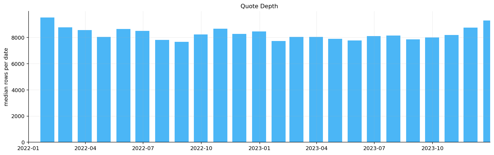
fig, ax = plt.subplots(figsize=(13, 4.2))
ax.plot(monthly_spread.index, monthly_spread["median"], color=palette[3], lw=1.5, label="median")
ax.plot(monthly_spread.index, monthly_spread["p90"], color=palette[6], lw=1.2, label="p90")
ax.fill_between(monthly_spread.index, monthly_spread["median"].to_numpy(float), monthly_spread["p90"].to_numpy(float), color=palette[6], alpha=0.14)
ax.set_ylabel("relative spread")
ax.set_title("Spread Quality")
ax.set_xlim(start_date, end_date)
ax.legend(**legend_kw)
ax.grid(True, alpha=0.20)
fig.tight_layout(pad=1.25)
plt.show()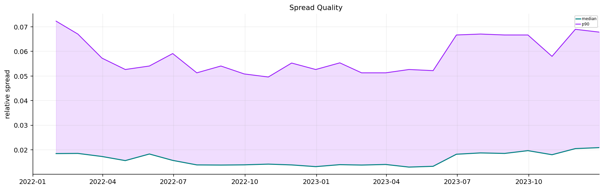
def make_otm_quotes(q, min_dte=14.0, max_dte=150.0, min_vega=0.0, max_relative_spread=0.45, max_abs_log_moneyness=0.32, min_quotes_per_expiry=8, min_expiries_per_date=5):
x = q.copy()
rows = [{"step": "clean quotes", "rows": len(x), "removed": 0}]
def keep(name, mask):
nonlocal x
before = len(x)
x = x.loc[mask].copy()
rows.append({"step": name, "rows": len(x), "removed": before - len(x)})
keep("DTE window", x["dte_days"].between(float(min_dte), float(max_dte)))
keep("log-moneyness window", x["log_moneyness"].abs().le(float(max_abs_log_moneyness)))
keep("spread window", x["relative_spread"].between(0.0, float(max_relative_spread)))
if "vega" in x.columns and float(min_vega) > 0.0:
keep("vega floor", x["vega"].abs().ge(float(min_vega)))
x["_row_id"] = np.arange(len(x), dtype=np.int64)
otm_side = np.where(x["log_moneyness"] < -0.0125, "put", np.where(x["log_moneyness"] > 0.0125, "call", "either"))
opt_side = np.where(x["option_type"].astype(str).str.lower().str.startswith("p"), "put", np.where(x["option_type"].astype(str).str.lower().str.startswith("c"), "call", "other"))
x["type_penalty"] = np.where(otm_side == "either", 0, np.where(opt_side == otm_side, 0, 1))
x["quote_score"] = x["relative_spread"].fillna(1.0) + 0.02 * x["log_moneyness"].abs()
before = len(x)
x = x.sort_values(["date", "expiry", "strike", "type_penalty", "quote_score"]).drop_duplicates(["date", "expiry", "strike"], keep="first").copy()
rows.append({"step": "OTM side by strike", "rows": len(x), "removed": before - len(x)})
x["dte_bucket"] = pd.cut(x["dte_days"], [0, 14, 30, 60, 90, 120, 180], include_lowest=True)
x["log_moneyness_bucket"] = pd.cut(x["log_moneyness"], [-0.45, -0.30, -0.20, -0.12, -0.06, -0.02, 0.02, 0.06, 0.12, 0.20, 0.30, 0.45], include_lowest=True)
keys = ["date", "expiry", "option_type", "dte_bucket", "log_moneyness_bucket"]
x["cell_rows"] = x.groupby(keys, observed=True)["mid"].transform("size").fillna(1.0)
expiry_rows = x.groupby(["date", "expiry"]).size().rename("expiry_rows")
x = x.merge(expiry_rows.reset_index(), on=["date", "expiry"], how="left")
before = len(x)
x = x[x["expiry_rows"].ge(int(min_quotes_per_expiry))].copy()
rows.append({"step": "expiry support", "rows": len(x), "removed": before - len(x)})
date_expiries = x.groupby("date")["expiry"].nunique()
good_dates = date_expiries[date_expiries.ge(int(min_expiries_per_date))].index
before = len(x)
x = x[x["date"].isin(good_dates)].copy()
rows.append({"step": "date support", "rows": len(x), "removed": before - len(x)})
return x, pd.DataFrame(rows)def calibration_grid_quotes(q, dte_targets, k_targets, min_quotes_per_date=120, max_quotes_per_date=200):
pieces = []
dte_targets = np.asarray(dte_targets, dtype=float)
k_targets = np.asarray(k_targets, dtype=float)
for d, day in q.groupby("date", sort=True):
expiry_table = day.groupby("expiry", as_index=False).agg(dte=("dte_days", "median"), n=("mid", "size"))
expiry_table = expiry_table[expiry_table["n"].ge(8)].copy()
used_expiries = set()
expiries = []
for target in dte_targets:
available = expiry_table[~expiry_table["expiry"].isin(used_expiries)].copy()
if available.empty:
break
idx = (available["dte"] - target).abs().idxmin()
expiry = available.loc[idx, "expiry"]
expiries.append(expiry)
used_expiries.add(expiry)
ids = []
targets = {}
for expiry in expiries:
g = day[day["expiry"].eq(expiry)].copy()
used = set()
for kt in k_targets:
r = g[~g["_row_id"].isin(used)].copy()
if r.empty:
break
score = (r["log_moneyness"] - kt).abs() + 0.03 * r["relative_spread"].fillna(1.0)
idx = score.idxmin()
rid = int(r.loc[idx, "_row_id"])
ids.append(rid)
targets[rid] = (float(kt), float(g["dte_days"].median()))
used.add(rid)
selected = day[day["_row_id"].isin(ids)].copy()
if len(selected) < int(min_quotes_per_date):
remain = day[~day["_row_id"].isin(selected["_row_id"])].copy()
if not remain.empty:
dte_gap = np.min(np.abs(remain["dte_days"].to_numpy(float)[:, None] - dte_targets[None, :]), axis=1)
k_gap = np.min(np.abs(remain["log_moneyness"].to_numpy(float)[:, None] - k_targets[None, :]), axis=1)
remain["selection_score"] = 0.003 * dte_gap + k_gap + 0.10 * remain["relative_spread"].fillna(1.0)
remain["selection_rank"] = remain["selection_score"].rank(method="first")
selected = pd.concat([selected, remain[remain["selection_rank"].le(max(int(min_quotes_per_date) - len(selected), 0))]], ignore_index=False)
if len(selected) > int(max_quotes_per_date):
dte_gap = np.min(np.abs(selected["dte_days"].to_numpy(float)[:, None] - dte_targets[None, :]), axis=1)
k_gap = np.min(np.abs(selected["log_moneyness"].to_numpy(float)[:, None] - k_targets[None, :]), axis=1)
selected["selection_score"] = 0.003 * dte_gap + k_gap + 0.10 * selected["relative_spread"].fillna(1.0)
selected["selection_rank"] = selected["selection_score"].rank(method="first")
selected = selected[selected["selection_rank"].le(int(max_quotes_per_date))].copy()
for rid, vals in targets.items():
selected.loc[selected["_row_id"].eq(rid), "k_target"] = vals[0]
selected.loc[selected["_row_id"].eq(rid), "dte_target"] = vals[1]
pieces.append(selected)
out = pd.concat(pieces, ignore_index=True) if pieces else q.iloc[:0].copy()
out = out.drop(columns=[c for c in ["type_penalty", "quote_score", "selection_score", "selection_rank", "expiry_rows", "_row_id"] if c in out.columns])
out["obs_weight"] = out["obs_weight"] * out["cell_rows"].clip(lower=1)
for name in out.columns:
dtype_name = str(out[name].dtype).lower()
if dtype_name == "category" or "interval" in dtype_name:
out[name] = out[name].astype(str)
return out.reset_index(drop=True)target_dtes = np.array([14.0, 21.0, 30.0, 45.0, 60.0, 75.0, 90.0, 105.0, 120.0, 150.0])
k_targets = np.array([-0.30, -0.25, -0.20, -0.16, -0.12, -0.08, -0.04, -0.015, 0.0, 0.015, 0.04, 0.08, 0.12, 0.16, 0.20, 0.25, 0.30])
calib_path = cache_dir / "spx_calibration_quotes.parquet"
steps_path = calib_path.with_suffix(".steps.json")
calib_settings = {"method": "otm daily dte-k grid", "carry": clean_settings["carry"], "target_dtes": target_dtes.tolist(), "k_targets": k_targets.tolist(), "min_quotes_per_date": 120, "max_quotes_per_date": 200, "source_rows": int(len(clean_quotes))}
if calib_path.exists() and steps_path.exists() and same_settings(calib_path, calib_settings):
calibration_quotes = pd.read_parquet(calib_path)
selection_steps = pd.read_json(steps_path)
else:
otm_quotes, selection_steps = make_otm_quotes(clean_quotes, min_dte=14.0, max_dte=150.0, min_vega=0.0, max_relative_spread=0.45, max_abs_log_moneyness=0.32, min_quotes_per_expiry=8, min_expiries_per_date=5)
calibration_quotes = calibration_grid_quotes(otm_quotes, target_dtes, k_targets, min_quotes_per_date=120, max_quotes_per_date=200)
calibration_quotes.to_parquet(calib_path, index=False)
selection_steps.to_json(steps_path, orient="records", indent=2, date_format="iso")
write_meta(calib_path, calib_settings, len(calibration_quotes))
daily_selection = calibration_quotes.groupby("date").size()
display(pd.DataFrame([{"clean_rows": len(clean_quotes), "calibration_rows": len(calibration_quotes), "dates": calibration_quotes["date"].nunique(), "avg_quotes_per_date": daily_selection.mean(), "median_quotes_per_date": daily_selection.median(), "min_quotes_per_date": daily_selection.min(), "max_quotes_per_date": daily_selection.max(), "median_cell_rows": calibration_quotes["cell_rows"].median()}]).round(2))
display(selection_steps)
display(calibration_quotes.groupby(["dte_bucket", "option_type"], observed=True)["cell_rows"].agg(["size", "sum", "median"]).reset_index().iloc[:24])| clean_rows | calibration_rows | dates | avg_quotes_per_date | median_quotes_per_date | min_quotes_per_date | max_quotes_per_date | median_cell_rows | |
|---|---|---|---|---|---|---|---|---|
| 0 | 4164745 | 85850 | 505 | 170.000000 | 170.000000 | 170 | 170 | 17.000000 |
| step | rows | removed | |
|---|---|---|---|
| 0 | clean quotes | 4164745 | 0 |
| 1 | DTE window | 3296919 | 867826 |
| 2 | log-moneyness window | 3255684 | 41235 |
| 3 | spread window | 3255684 | 0 |
| 4 | OTM side by strike | 1790907 | 1464777 |
| 5 | expiry support | 1790907 | 0 |
| 6 | date support | 1790907 | 0 |
| dte_bucket | option_type | size | sum | median | |
|---|---|---|---|---|---|
| 0 | (120.0, 180.0] | call | 6790 | 97724 | 11.000000 |
| 1 | (120.0, 180.0] | put | 7235 | 163020 | 21.000000 |
| 2 | (14.0, 30.0] | call | 9542 | 143294 | 14.000000 |
| 3 | (14.0, 30.0] | put | 10875 | 179268 | 12.000000 |
| 4 | (30.0, 60.0] | call | 8668 | 143318 | 13.000000 |
| 5 | (30.0, 60.0] | put | 10117 | 204396 | 15.000000 |
| 6 | (60.0, 90.0] | call | 7411 | 170186 | 19.000000 |
| 7 | (60.0, 90.0] | put | 8212 | 252394 | 32.000000 |
| 8 | (90.0, 120.0] | call | 8172 | 149247 | 15.000000 |
| 9 | (90.0, 120.0] | put | 8828 | 233707 | 28.000000 |
date_counts = calibration_quotes.groupby("date").size()
daily_dates = date_counts[date_counts >= 120].index
weekly_dates = daily_dates[::5]
month_end_dates = calibration_quotes.groupby(calibration_quotes["date"].dt.to_period("M"))["date"].max().dropna().values
stress_dates = rows_by_date.sort_values(ascending=False).iloc[:20].index
sv_dates = daily_dates
main_day = date_counts.loc[daily_dates].sort_values(ascending=False).index[0]
day_quotes = calibration_quotes[calibration_quotes["date"].eq(main_day)].copy()
display(pd.DataFrame([{"daily_calibration_dates": len(daily_dates), "sv_calibration_dates": len(sv_dates), "main_day": main_day, "main_day_quotes": len(day_quotes)}]))| daily_calibration_dates | sv_calibration_dates | main_day | main_day_quotes | |
|---|---|---|---|---|
| 0 | 505 | 505 | 2022-01-03 | 170 |
@njit
def bsm_cf(u, s, r, q, tau, sigma):
return np.exp(1j * u * (np.log(s) + (r - q - 0.5 * sigma * sigma) * tau) - 0.5 * sigma * sigma * u * u * tau)
@njit
def merton_cf(u, s, r, q, tau, sigma, lam, muj, sj):
omega = -lam * (np.exp(muj + 0.5 * sj * sj) - 1.0)
return np.exp(1j * u * (np.log(s) + (r - q + omega - 0.5 * sigma * sigma) * tau) - 0.5 * sigma * sigma * u * u * tau + lam * tau * (np.exp(1j * u * muj - 0.5 * sj * sj * u * u) - 1.0))
@njit
def vg_cf(u, s, r, q, tau, sigma, theta, nu):
mart = 1.0 - theta * nu - 0.5 * sigma * sigma * nu
if mart <= 0.0:
return np.nan + 1j * np.nan
omega = np.log(mart) / nu
return np.exp(1j * u * (np.log(s) + (r - q + omega) * tau)) * (1.0 - 1j * theta * nu * u + 0.5 * sigma * sigma * nu * u * u) ** (-tau / nu)
@njit
def heston_cf(u, s, r, q, tau, v0, kappa, theta, sigv, rho):
rho = min(max(rho, -0.999), 0.999)
d = np.sqrt((rho * sigv * 1j * u - kappa) ** 2 + sigv * sigv * (1j * u + u * u))
g = (kappa - rho * sigv * 1j * u - d) / (kappa - rho * sigv * 1j * u + d)
expdt = np.exp(-d * tau)
c = 1j * u * (np.log(s) + (r - q) * tau) + (kappa * theta / (sigv * sigv)) * ((kappa - rho * sigv * 1j * u - d) * tau - 2.0 * np.log((1.0 - g * expdt) / (1.0 - g)))
dcoef = ((kappa - rho * sigv * 1j * u - d) / (sigv * sigv)) * ((1.0 - expdt) / (1.0 - g * expdt))
return np.exp(c + dcoef * v0)
@njit
def bates_cf(u, s, r, q, tau, v0, kappa, theta, sigv, rho, lam, muj, sj):
omega = -lam * (np.exp(muj + 0.5 * sj * sj) - 1.0)
jump = np.exp(lam * tau * (np.exp(1j * u * muj - 0.5 * sj * sj * u * u) - 1.0))
return heston_cf(u, s, r + omega, q, tau, v0, kappa, theta, sigv, rho) * jumpdef params_for_model(name):
values = {
"BSM": np.array([0.20]),
"Merton": np.array([0.18, 0.70, -0.06, 0.22]),
"VG": np.array([0.18, -0.06, 0.25]),
"Heston": np.array([0.04, 2.0, 0.04, 0.60, -0.55]),
"Bates": np.array([0.04, 2.0, 0.04, 0.60, -0.55, 0.70, -0.06, 0.22]),
}
return values[name]
@njit
def cf_model(model_id, u, params, s, r, q, tau):
if model_id == 1:
return merton_cf(u, s, r, q, tau, params[0], params[1], params[2], params[3])
if model_id == 2:
return vg_cf(u, s, r, q, tau, params[0], params[1], params[2])
if model_id == 3:
return heston_cf(u, s, r, q, tau, params[0], params[1], params[2], params[3], params[4])
if model_id == 4:
return bates_cf(u, s, r, q, tau, params[0], params[1], params[2], params[3], params[4], params[5], params[6], params[7])
return bsm_cf(u, s, r, q, tau, params[0])u_grid = np.linspace(0.0, 90.0, 361)
s0 = float(day_quotes["spot"].median())
r0 = float(day_quotes["rate"].median())
q0 = float(day_quotes["dividend_yield"].median())
tau0 = 60 / ann_days
model_names = ["BSM", "Merton", "VG", "Heston", "Bates"]
model_ids = {"BSM": 0, "Merton": 1, "VG": 2, "Heston": 3, "Bates": 4}
cf_rows = []
for name in model_names:
params = params_for_model(name)
for u in u_grid:
phi = cf_model(model_ids[name], float(u), params, s0, r0, q0, tau0)
cf_rows.append({"model": name, "u": u, "magnitude": abs(phi)})
cf_fingerprint = pd.DataFrame(cf_rows)
display(cf_fingerprint.groupby("model")["magnitude"].agg(["min", "median", "max"]).reset_index().round(6))| model | min | median | max | |
|---|---|---|---|---|
| 0 | BSM | 0.000000 | 0.001290 | 1.000000 |
| 1 | Bates | 0.001874 | 0.051867 | 1.000000 |
| 2 | Heston | 0.002103 | 0.058188 | 1.000000 |
| 3 | Merton | 0.000000 | 0.004071 | 1.000000 |
| 4 | VG | 0.098879 | 0.232223 | 1.000000 |
@njit
def density_from_cf(model_id, params, x_grid, s, r, q, tau, u_max, n):
out = np.empty(x_grid.size)
du = u_max / n
for i in range(x_grid.size):
x = x_grid[i]
val = 0.0
for j in range(1, n + 1):
u = (j - 0.5) * du
val += np.real(np.exp(-1j * u * x) * cf_model(model_id, u, params, s, r, q, tau)) * du / np.pi
out[i] = max(val, 0.0)
return out
x_grid = np.linspace(np.log(s0) - 0.45, np.log(s0) + 0.35, 420)
density_rows = []
for name in model_names:
params = params_for_model(name)
d = density_from_cf(model_ids[name], params, x_grid, s0, r0, q0, tau0, 160.0, 768)
area = np.trapezoid(d, x_grid)
if area > 0:
d = d / area
for x, y in zip(x_grid, d):
density_rows.append({"model": name, "x": x, "density": y})
cf_density = pd.DataFrame(density_rows)fig, axes = plt.subplots(1, 2, figsize=(13, 4.5))
for i, name in enumerate(["BSM", "Merton", "VG"]):
g = cf_density[cf_density["model"].eq(name)]
axes[0].plot(np.exp(g["x"]) / s0, g["density"], lw=1.2, color=palette[i % len(palette)], label=name)
for i, name in enumerate(["BSM", "Heston", "Bates"]):
g = cf_density[cf_density["model"].eq(name)]
axes[1].plot(np.exp(g["x"]) / s0, g["density"], lw=1.2, color=palette[(i + 3) % len(palette)], label=name)
axes[0].set_xlabel("S / S0")
axes[0].set_ylabel("density")
axes[0].set_title("Jump Distribution")
axes[1].set_xlabel("S / S0")
axes[1].set_ylabel("density")
axes[1].set_title("Volatility Distribution")
axes[0].legend(ncol=3, **legend_kw)
axes[1].legend(ncol=3, **legend_kw)
fig.tight_layout(pad=1.25, h_pad=1.0, w_pad=1.0)
plt.show()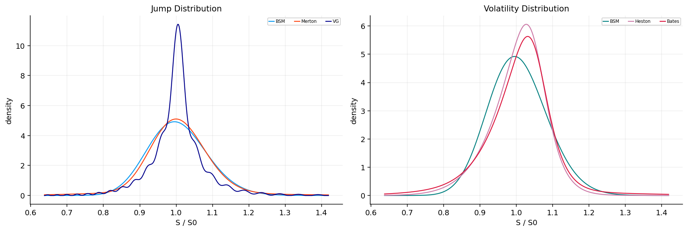
@njit
def direct_call(model_id, params, s, k, r, q, tau, n, u_max):
du = u_max / n
phi_mi = cf_model(model_id, -1j, params, s, r, q, tau)
p1 = 0.5
p2 = 0.5
log_k = np.log(k)
for j in range(1, n + 1):
u = (j - 0.5) * du
p1 += du / np.pi * np.real(np.exp(-1j * u * log_k) * cf_model(model_id, u - 1j, params, s, r, q, tau) / (1j * u * phi_mi))
p2 += du / np.pi * np.real(np.exp(-1j * u * log_k) * cf_model(model_id, u, params, s, r, q, tau) / (1j * u))
return max(s * np.exp(-q * tau) * p1 - k * np.exp(-r * tau) * p2, 0.0)
@njit
def direct_batch(model_id, params, s, strikes, r, q, tau, n, u_max):
out = np.empty(strikes.size)
for i in range(strikes.size):
out[i] = direct_call(model_id, params, s, strikes[i], r, q, tau, n, u_max)
return out
@njit
def direct_grid(model_id, params, s, strikes, r, q, tau, n, u_max):
du = u_max / n
phi_mi = cf_model(model_id, -1j, params, s, r, q, tau)
p1 = np.full(strikes.size, 0.5)
p2 = np.full(strikes.size, 0.5)
for j in range(1, n + 1):
u = (j - 0.5) * du
a1 = cf_model(model_id, u - 1j, params, s, r, q, tau) / (1j * u * phi_mi)
a2 = cf_model(model_id, u, params, s, r, q, tau) / (1j * u)
weight = du / np.pi
for i in range(strikes.size):
e = np.exp(-1j * u * np.log(strikes[i]))
p1[i] += weight * np.real(e * a1)
p2[i] += weight * np.real(e * a2)
out = np.empty(strikes.size)
stock_disc = s * np.exp(-q * tau)
bond_disc = np.exp(-r * tau)
for i in range(strikes.size):
out[i] = max(stock_disc * p1[i] - strikes[i] * bond_disc * p2[i], 0.0)
return outstrike_grid = np.linspace(0.75, 1.25, 1000) * s0
tau_grid = np.array([30, 60, 120]) / ann_days
direct_rows = []
for tau in tau_grid:
params = np.array([0.22])
px = direct_grid(0, params, s0, strike_grid, r0, 0.0, float(tau), 2048, 180.0)
closed = np.asarray(bsm_price("call", s0, strike_grid, tau, params[0], r0, 0.0), dtype=float)
for k, a, b in zip(strike_grid, px, closed):
direct_rows.append({"tau": tau, "strike": k, "direct_price": a, "closed_price": b, "price_error": a - b, "abs_error": abs(a - b)})
direct_validation = pd.DataFrame(direct_rows)
display(direct_validation.groupby("tau")["abs_error"].agg(["max", "median"]).reset_index().round(10))| tau | max | median | |
|---|---|---|---|
| 0 | 0.082136 | 0.000000 | 0.000000 |
| 1 | 0.164271 | 0.000000 | 0.000000 |
| 2 | 0.328542 | 0.000000 | 0.000000 |
cut_rows = []
for cutoff in [60.0, 90.0, 120.0, 160.0, 220.0]:
px = direct_grid(0, np.array([0.22]), s0, strike_grid, r0, 0.0, 60 / ann_days, 1536, cutoff)
closed = np.asarray(bsm_price("call", s0, strike_grid, 60 / ann_days, 0.22, r0, 0.0), dtype=float)
cut_rows.append({"u_max": cutoff, "max_abs_error": np.max(np.abs(px - closed)), "median_abs_error": np.median(np.abs(px - closed))})
node_rows = []
for nodes in [256, 512, 1024, 2048, 4096]:
px = direct_grid(0, np.array([0.22]), s0, strike_grid, r0, 0.0, 60 / ann_days, nodes, 180.0)
closed = np.asarray(bsm_price("call", s0, strike_grid, 60 / ann_days, 0.22, r0, 0.0), dtype=float)
node_rows.append({"nodes": nodes, "max_abs_error": np.max(np.abs(px - closed)), "median_abs_error": np.median(np.abs(px - closed))})
direct_cutoff = pd.DataFrame(cut_rows)
direct_nodes = pd.DataFrame(node_rows)
display(direct_cutoff.round(10))
display(direct_nodes.round(10))| u_max | max_abs_error | median_abs_error | |
|---|---|---|---|
| 0 | 60.000000 | 0.000017 | 0.000011 |
| 1 | 90.000000 | 0.000000 | 0.000000 |
| 2 | 120.000000 | 0.000000 | 0.000000 |
| 3 | 160.000000 | 0.000000 | 0.000000 |
| 4 | 220.000000 | 0.000000 | 0.000000 |
| nodes | max_abs_error | median_abs_error | |
|---|---|---|---|
| 0 | 256 | 0.000000 | 0.000000 |
| 1 | 512 | 0.000000 | 0.000000 |
| 2 | 1024 | 0.000000 | 0.000000 |
| 3 | 2048 | 0.000000 | 0.000000 |
| 4 | 4096 | 0.000000 | 0.000000 |
def merton_series_call(s, k, r, q, tau, sigma, lam, muj, sj, n_max=60):
df = math.exp(-r * tau)
forward = s * math.exp((r - q) * tau)
jump_comp = math.exp(muj + 0.5 * sj * sj) - 1.0
px = 0.0
weight = math.exp(-lam * tau)
for n in range(n_max + 1):
if n > 0:
weight *= lam * tau / n
f_n = forward * math.exp(-lam * jump_comp * tau + n * muj + 0.5 * n * sj * sj)
sig_n = math.sqrt(max(sigma * sigma + n * sj * sj / max(tau, 1e-12), 1e-12))
px += weight * float(bsm_price("call", s, k, tau, sig_n, r, q, forward=f_n, discount_factor=df))
return px
merton_params = params_for_model("Merton")
merton_direct = direct_grid(1, merton_params, s0, strike_grid, r0, 0.0, 60 / ann_days, 4096, 220.0)
merton_series = np.array([merton_series_call(s0, k, r0, 0.0, 60 / ann_days, merton_params[0], merton_params[1], merton_params[2], merton_params[3], n_max=80) for k in strike_grid])
merton_validation = pd.DataFrame({"strike": strike_grid, "direct": merton_direct, "series": merton_series, "abs_error": np.abs(merton_direct - merton_series)})
display(merton_validation["abs_error"].agg(["max", "median"]).to_frame("Merton direct vs series").T.round(8))| max | median | |
|---|---|---|
| Merton direct vs series | 0.000000 | 0.000000 |
@njit
def fft_inplace(x):
n = x.size
j = 0
for i in range(1, n):
bit = n >> 1
while j & bit:
j ^= bit
bit >>= 1
j ^= bit
if i < j:
tmp = x[i]
x[i] = x[j]
x[j] = tmp
length = 2
while length <= n:
angle = -2.0 * np.pi / length
wlen = np.cos(angle) + 1j * np.sin(angle)
half = length >> 1
for i0 in range(0, n, length):
w = 1.0 + 0.0j
for j0 in range(half):
u = x[i0 + j0]
v = x[i0 + j0 + half] * w
x[i0 + j0] = u + v
x[i0 + j0 + half] = u - v
w *= wlen
length <<= 1
@njit
def carr_madan_fft(model_id, params, s, r, q, tau, alpha, n, eta):
lam = 2.0 * np.pi / (n * eta)
start = np.log(s) - 0.5 * n * lam
x = np.empty(n, dtype=np.complex128)
for j in range(n):
u = j * eta
shifted = u - 1j * (alpha + 1.0)
denom = alpha * alpha + alpha - u * u + 1j * (2.0 * alpha + 1.0) * u
weight = 0.5 if j == 0 else 1.0
psi = np.exp(-r * tau) * cf_model(model_id, shifted, params, s, r, q, tau) / denom
x[j] = psi * np.exp(-1j * u * start) * eta * weight
fft_inplace(x)
strikes = np.empty(n)
prices = np.empty(n)
for m in range(n):
log_k = start + m * lam
strikes[m] = np.exp(log_k)
prices[m] = max(np.exp(-alpha * log_k) * np.real(x[m]) / np.pi, 0.0)
return strikes, pricesfft_rows = []
closed = np.asarray(bsm_price("call", s0, strike_grid, 60 / ann_days, 0.22, r0, 0.0), dtype=float)
for alpha in [0.75, 1.0, 1.25, 1.5, 1.75, 2.0]:
st, px = carr_madan_fft(0, np.array([0.22]), s0, r0, 0.0, 60 / ann_days, alpha, 8192, 0.35)
interp = np.interp(strike_grid, st, px)
fft_rows.append({"alpha": alpha, "n": 8192, "eta": 0.35, "median_abs_error": float(np.median(np.abs(interp - closed))), "max_abs_error": float(np.max(np.abs(interp - closed))), "negative_prices": int((px < -1e-8).sum()), "grid_min": st.min(), "grid_max": st.max(), "grid_points_in_market": int(((st >= strike_grid.min()) & (st <= strike_grid.max())).sum())})
for n in [2048, 4096, 8192, 16384]:
st, px = carr_madan_fft(0, np.array([0.22]), s0, r0, 0.0, 60 / ann_days, 1.5, n, 0.35)
interp = np.interp(strike_grid, st, px)
fft_rows.append({"alpha": 1.5, "n": n, "eta": 0.35, "median_abs_error": float(np.median(np.abs(interp - closed))), "max_abs_error": float(np.max(np.abs(interp - closed))), "negative_prices": int((px < -1e-8).sum()), "grid_min": st.min(), "grid_max": st.max(), "grid_points_in_market": int(((st >= strike_grid.min()) & (st <= strike_grid.max())).sum())})
fft_validation_table = pd.DataFrame(fft_rows)
display(fft_validation_table.round(8))| alpha | n | eta | median_abs_error | max_abs_error | negative_prices | grid_min | grid_max | grid_points_in_market | |
|---|---|---|---|---|---|---|---|---|---|
| 0 | 0.750000 | 8192 | 0.350000 | 0.009255 | 0.019678 | 0 | 0.606209 | 37,853,555.241942 | 233 |
| 1 | 1.000000 | 8192 | 0.350000 | 0.002516 | 0.012939 | 0 | 0.606209 | 37,853,555.241942 | 233 |
| 2 | 1.250000 | 8192 | 0.350000 | 0.002440 | 0.012863 | 0 | 0.606209 | 37,853,555.241942 | 233 |
| 3 | 1.500000 | 8192 | 0.350000 | 0.002439 | 0.012862 | 0 | 0.606209 | 37,853,555.241942 | 233 |
| 4 | 1.750000 | 8192 | 0.350000 | 0.002439 | 0.012862 | 0 | 0.606209 | 37,853,555.241942 | 233 |
| 5 | 2.000000 | 8192 | 0.350000 | 0.002439 | 0.012862 | 0 | 0.606209 | 37,853,555.241942 | 233 |
| 6 | 1.500000 | 2048 | 0.350000 | 0.040417 | 0.205818 | 0 | 0.606209 | 37,605,514.499757 | 58 |
| 7 | 1.500000 | 4096 | 0.350000 | 0.010284 | 0.051469 | 0 | 0.606209 | 37,770,693.742930 | 116 |
| 8 | 1.500000 | 8192 | 0.350000 | 0.002439 | 0.012862 | 0 | 0.606209 | 37,853,555.241942 | 233 |
| 9 | 1.500000 | 16384 | 0.350000 | 0.000578 | 0.003219 | 0 | 0.606209 | 37,895,054.134752 | 466 |
from quantfinlab import _kernels
fft_cpp_rows = []
for model_id, name, params in [(0, "BSM", np.array([0.22])), (1, "Merton", params_for_model("Merton")), (2, "VG", params_for_model("VG")), (3, "Heston", params_for_model("Heston")), (4, "Bates", params_for_model("Bates"))]:
t0 = time.perf_counter()
st_n, px_n = carr_madan_fft(model_id, params, s0, r0, 0.0, 60 / ann_days, 1.5, 8192, 0.35)
numba_runtime = time.perf_counter() - t0
t0 = time.perf_counter()
cpp = _kernels.fft_prices(model_id, params, s0, r0, 0.0, 60 / ann_days, 1.5, 8192, 0.35, 1)
cpp_runtime = time.perf_counter() - t0
st_c = np.asarray(cpp["strikes"], dtype=float)
px_c = np.asarray(cpp["prices"], dtype=float)
interp_n = np.interp(strike_grid, st_n, px_n)
interp_c = np.interp(strike_grid, st_c, px_c)
row = {"model": name, "n": 8192, "alpha": 1.5, "numba_runtime": numba_runtime, "cpp_runtime": cpp_runtime, "speedup": numba_runtime / max(cpp_runtime, 1e-12), "max_abs_diff": np.max(np.abs(interp_n - interp_c)), "median_abs_diff": np.median(np.abs(interp_n - interp_c))}
if model_id == 0:
row["bsm_closed_median_error"] = np.median(np.abs(interp_c - closed))
fft_cpp_rows.append(row)
fft_cpp_validation = pd.DataFrame(fft_cpp_rows)
display(fft_cpp_validation.round(8))| model | n | alpha | numba_runtime | cpp_runtime | speedup | max_abs_diff | median_abs_diff | bsm_closed_median_error | |
|---|---|---|---|---|---|---|---|---|---|
| 0 | BSM | 8192 | 1.500000 | 0.003457 | 0.003159 | 1.094463 | 0.000000 | 0.000000 | 0.002439 |
| 1 | Merton | 8192 | 1.500000 | 0.003452 | 0.003883 | 0.889146 | 0.000000 | 0.000000 | NaN |
| 2 | VG | 8192 | 1.500000 | 0.005481 | 0.005283 | 1.037476 | 0.000000 | 0.000000 | NaN |
| 3 | Heston | 8192 | 1.500000 | 0.004768 | 0.008715 | 0.547093 | 0.000000 | 0.000000 | NaN |
| 4 | Bates | 8192 | 1.500000 | 0.005403 | 0.010439 | 0.517612 | 0.000000 | 0.000000 | NaN |
@njit
def variance_rate(model_id, params, tau):
if model_id == 1:
return params[0] * params[0] + max(params[1], 0.0) * (params[2] * params[2] + params[3] * params[3])
if model_id == 2:
return params[0] * params[0] + params[1] * params[1] * params[2]
if model_id == 3 or model_id == 4:
v0 = max(params[0], 1e-10)
kappa = max(params[1], 1e-10)
theta = max(params[2], 1e-10)
base = theta + (v0 - theta) * (1.0 - np.exp(-kappa * tau)) / max(kappa * tau, 1e-10)
if model_id == 4:
base += max(params[5], 0.0) * (params[6] * params[6] + params[7] * params[7])
return base
return params[0] * params[0]
@njit
def chi_psi(n, a, b, c, d):
if d <= c:
return 0.0, 0.0
width = b - a
if n == 0:
return np.exp(d) - np.exp(c), d - c
u = n * np.pi / width
xd = u * (d - a)
xc = u * (c - a)
chi = (np.cos(xd) * np.exp(d) - np.cos(xc) * np.exp(c) + u * (np.sin(xd) * np.exp(d) - np.sin(xc) * np.exp(c))) / (1.0 + u * u)
psi = (np.sin(xd) - np.sin(xc)) / u
return chi, psi
@njit
def cos_one(model_id, params, s, k, r, q, tau, flag, n_terms, width_mult):
drift = np.log(s / k) + (r - q) * tau
half = max(width_mult * np.sqrt(max(variance_rate(model_id, params, tau) * tau, 1e-10)) + 0.10 * abs(drift), 0.35)
a = drift - half
b = drift + half
width = b - a
total = 0.0
for n in range(n_terms):
u = n * np.pi / width
phi = cf_model(model_id, u, params, s, r, q, tau) * np.exp(-1j * u * np.log(k))
phase = np.exp(-1j * u * a)
if flag > 0:
c = max(0.0, a)
d = b
chi, psi = chi_psi(n, a, b, c, d)
coeff = 2.0 * k * (chi - psi) / width
else:
c = a
d = min(0.0, b)
chi, psi = chi_psi(n, a, b, c, d)
coeff = 2.0 * k * (psi - chi) / width
term = np.real(phi * phase) * coeff
if n == 0:
term *= 0.5
total += term
return max(np.exp(-r * tau) * total, 0.0)
@njit
def cos_batch(model_id, params, s, strikes, r, q, tau, flag, n_terms, width_mult):
out = np.empty(strikes.size)
for i in range(strikes.size):
out[i] = cos_one(model_id, params, s, strikes[i], r, q, tau, flag, n_terms, width_mult)
return outcos_rows = []
for model_id, name, params, width in [(0, "BSM", np.array([0.22]), 12.0), (1, "Merton", params_for_model("Merton"), 14.0), (2, "VG", params_for_model("VG"), 30.0), (3, "Heston", params_for_model("Heston"), 14.0), (4, "Bates", params_for_model("Bates"), 14.0)]:
ref = np.asarray(bsm_price("call", s0, strike_grid, 60 / ann_days, 0.22, r0, 0.0), dtype=float) if model_id == 0 else direct_grid(model_id, params, s0, strike_grid, r0, 0.0, 60 / ann_days, 4096, 500.0 if model_id == 2 else 180.0)
for n_terms in [32, 64, 128, 256, 512]:
px = cos_batch(model_id, params, s0, strike_grid, r0, 0.0, 60 / ann_days, 1, n_terms, width)
cos_rows.append({"model": name, "n_terms": n_terms, "width": width, "max_abs_error": float(np.max(np.abs(px - ref))), "median_abs_error": float(np.median(np.abs(px - ref)))})
cos_validation_table = pd.DataFrame(cos_rows)
display(cos_validation_table.groupby("model")[["max_abs_error", "median_abs_error"]].min().reset_index().round(8))| model | max_abs_error | median_abs_error | |
|---|---|---|---|
| 0 | BSM | 0.000000 | 0.000000 |
| 1 | Bates | 0.000027 | 0.000014 |
| 2 | Heston | 0.000026 | 0.000016 |
| 3 | Merton | 0.000012 | 0.000011 |
| 4 | VG | 0.048626 | 0.022753 |
width_rows = []
for width in [8.0, 10.0, 12.0, 14.0, 18.0, 24.0, 30.0]:
px = cos_batch(2, params_for_model("VG"), s0, strike_grid, r0, 0.0, 60 / ann_days, 1, 512, width)
ref = direct_grid(2, params_for_model("VG"), s0, strike_grid, r0, 0.0, 60 / ann_days, 4096, 500.0)
width_rows.append({"model": "VG", "width": width, "max_abs_error": float(np.max(np.abs(px - ref))), "median_abs_error": float(np.median(np.abs(px - ref)))})
cos_width_table = pd.DataFrame(width_rows)
display(cos_width_table.round(8))| model | width | max_abs_error | median_abs_error | |
|---|---|---|---|---|
| 0 | VG | 8.000000 | 0.040119 | 0.022012 |
| 1 | VG | 10.000000 | 0.036469 | 0.022209 |
| 2 | VG | 12.000000 | 0.036268 | 0.022109 |
| 3 | VG | 14.000000 | 0.036253 | 0.022116 |
| 4 | VG | 18.000000 | 0.036198 | 0.022344 |
| 5 | VG | 24.000000 | 0.036776 | 0.022830 |
| 6 | VG | 30.000000 | 0.048626 | 0.022753 |
cos_cpp_rows = []
strike_grid_cpp = np.linspace(0.70, 1.30, 1000) * s0
for model_id, name, params, width in [(0, "BSM", np.array([0.22]), 12.0), (1, "Merton", params_for_model("Merton"), 14.0), (2, "VG", params_for_model("VG"), 30.0), (3, "Heston", params_for_model("Heston"), 14.0), (4, "Bates", params_for_model("Bates"), 14.0)]:
taus = np.full_like(strike_grid_cpp, 60 / ann_days)
t0 = time.perf_counter()
px_n = cos_batch(model_id, params, s0, strike_grid_cpp, r0, 0.0, 60 / ann_days, 1, 512, width)
numba_runtime = time.perf_counter() - t0
t0 = time.perf_counter()
px_c = _kernels.cos_prices(model_id, params, strike_grid_cpp, taus, s0, r0, 0.0, 512, width, 1)
cpp_runtime = time.perf_counter() - t0
cos_cpp_rows.append({"model": name, "quotes": len(strike_grid_cpp), "numba_runtime": numba_runtime, "cpp_runtime": cpp_runtime, "speedup": numba_runtime / max(cpp_runtime, 1e-12), "max_abs_diff": float(np.max(np.abs(px_n - px_c))), "median_abs_diff": float(np.median(np.abs(px_n - px_c)))})
cos_cpp_validation = pd.DataFrame(cos_cpp_rows)
display(cos_cpp_validation.round(10))| model | quotes | numba_runtime | cpp_runtime | speedup | max_abs_diff | median_abs_diff | |
|---|---|---|---|---|---|---|---|
| 0 | BSM | 1000 | 0.078859 | 0.158706 | 0.496885 | 0.000000 | 0.000000 |
| 1 | Merton | 1000 | 0.219488 | 0.186808 | 1.174935 | 0.000000 | 0.000000 |
| 2 | VG | 1000 | 0.147649 | 0.229324 | 0.643847 | 0.000000 | 0.000000 |
| 3 | Heston | 1000 | 0.185496 | 0.331993 | 0.558736 | 0.000000 | 0.000000 |
| 4 | Bates | 1000 | 0.170369 | 0.380672 | 0.447548 | 0.000000 | 0.000000 |
def cos_groups(q):
work = q.reset_index(drop=True).copy()
out = []
for _, idx in work.groupby(["date", "expiry", "option_type"], sort=False).groups.items():
pos = np.asarray(idx, dtype=np.int64)
g = work.iloc[pos]
flag = 1 if str(g["option_type"].iloc[0]).lower().startswith("c") else -1
out.append((
pos,
g["strike"].to_numpy(float),
g["tau"].to_numpy(float),
float(g["spot"].median()),
float(g["rate"].median()),
float(g.get("dividend_yield", pd.Series(0.0, index=g.index)).median()),
flag,
))
return out
def cos_group_values(model, p, groups, n_rows, n_terms=256, width=14.0, engine="numba"):
ids = {"bsm": 0, "merton": 1, "vg": 2, "heston": 3, "bates": 4, "BSM": 0, "Merton": 1, "VG": 2, "Heston": 3, "Bates": 4}
out = np.empty(int(n_rows), dtype=float)
mid = ids[model]
for pos, k, tau, s, r, div, flag in groups:
if str(engine).lower() == "cpp":
out[pos] = _kernels.cos_prices(mid, np.asarray(p, dtype=float), k, tau, s, r, div, int(n_terms), float(width), int(flag))
else:
out[pos] = cos_batch(mid, np.asarray(p, dtype=float), s, k, r, div, float(np.nanmedian(tau)), int(flag), int(n_terms), float(width))
return out
def cos_group_price(model, p, q, n_terms=256, width=14.0, engine="numba"):
groups = cos_groups(q)
return cos_group_values(model, p, groups, len(q), n_terms=n_terms, width=width, engine=engine)engine_use = pd.DataFrame([
{"engine": "Direct integration", "role": "reference oracle", "used_for": "selected validation grids"},
{"engine": "FFT", "role": "strike grid", "used_for": "full log-strike grids"},
{"engine": "COS", "role": "arbitrary strikes", "used_for": "daily calibration"},
{"engine": "Grouped COS", "role": "production batches", "used_for": "date-expiry-type calibration groups"},
])
display(engine_use)
q_bench = calibration_quotes.sort_values(["date", "expiry", "option_type", "strike"]).reset_index(drop=True)
q_bench = q_bench.iloc[:min(10000, len(q_bench))].copy()
bench_groups = cos_groups(q_bench)
strike_10k = np.linspace(0.75, 1.25, 10000) * s0
tau_10k = np.full_like(strike_10k, 60 / ann_days)
model_10k_rows = []
for model_key, name, params, width in [
("BSM", "BSM", np.array([float(q_bench["iv_mid"].median())]), 12.0),
("Merton", "Merton", params_for_model("Merton"), 14.0),
("VG", "VG", params_for_model("VG"), 30.0),
("Heston", "Heston", params_for_model("Heston"), 14.0),
("Bates", "Bates", params_for_model("Bates"), 14.0),
]:
ref = cos_group_values(model_key, params, bench_groups, len(q_bench), n_terms=512, width=width, engine="numba")
t0 = time.perf_counter()
px_n = cos_group_values(model_key, params, bench_groups, len(q_bench), n_terms=256, width=width, engine="numba")
numba_runtime = time.perf_counter() - t0
t0 = time.perf_counter()
px_c = cos_group_values(model_key, params, bench_groups, len(q_bench), n_terms=256, width=width, engine="cpp")
cpp_runtime = time.perf_counter() - t0
u_max = 500.0 if name == "VG" else 180.0
direct_terms = 768
t0 = time.perf_counter()
direct_n = direct_grid({"BSM": 0, "Merton": 1, "VG": 2, "Heston": 3, "Bates": 4}[name], params, s0, strike_10k, r0, 0.0, 60 / ann_days, direct_terms, u_max)
direct_numba_runtime = time.perf_counter() - t0
t0 = time.perf_counter()
direct_c = _kernels.direct_prices({"BSM": 0, "Merton": 1, "VG": 2, "Heston": 3, "Bates": 4}[name], params, strike_10k, tau_10k, s0, r0, 0.0, direct_terms, u_max, 1)
direct_cpp_runtime = time.perf_counter() - t0
t0 = time.perf_counter()
fft_st_n, fft_px_n = carr_madan_fft({"BSM": 0, "Merton": 1, "VG": 2, "Heston": 3, "Bates": 4}[name], params, s0, r0, 0.0, 60 / ann_days, 1.5, 8192, 0.35)
fft_numba_runtime = time.perf_counter() - t0
t0 = time.perf_counter()
fft_c = _kernels.fft_prices({"BSM": 0, "Merton": 1, "VG": 2, "Heston": 3, "Bates": 4}[name], params, s0, r0, 0.0, 60 / ann_days, 1.5, 8192, 0.35, 1)
fft_cpp_runtime = time.perf_counter() - t0
fft_interp_n = np.interp(strike_10k, fft_st_n, fft_px_n)
fft_interp_c = np.interp(strike_10k, np.asarray(fft_c["strikes"], dtype=float), np.asarray(fft_c["prices"], dtype=float))
model_10k_rows.append({
"model": name,
"rows": len(q_bench),
"direct_numba_runtime": direct_numba_runtime,
"direct_cpp_runtime": direct_cpp_runtime,
"direct_speedup_cpp_vs_numba": direct_numba_runtime / max(direct_cpp_runtime, 1e-12),
"direct_implementation_median_diff": float(np.median(np.abs(direct_c - direct_n))),
"fft_numba_runtime": fft_numba_runtime,
"fft_cpp_runtime": fft_cpp_runtime,
"fft_speedup_cpp_vs_numba": fft_numba_runtime / max(fft_cpp_runtime, 1e-12),
"fft_implementation_median_diff": float(np.median(np.abs(fft_interp_c - fft_interp_n))),
"numba_runtime": numba_runtime,
"cpp_runtime": cpp_runtime,
"speedup_cpp_vs_numba": numba_runtime / max(cpp_runtime, 1e-12),
"numba_reference_error": float(np.median(np.abs(px_n - ref))),
"cpp_reference_error": float(np.median(np.abs(px_c - ref))),
"implementation_max_diff": float(np.max(np.abs(px_c - px_n))),
"implementation_median_diff": float(np.median(np.abs(px_c - px_n))),
"numba_prices_per_sec": len(q_bench) / max(numba_runtime, 1e-12),
"cpp_prices_per_sec": len(q_bench) / max(cpp_runtime, 1e-12),
})
model_10k_certificate = pd.DataFrame(model_10k_rows)
display(model_10k_certificate.round(8))| engine | role | used_for | |
|---|---|---|---|
| 0 | Direct integration | reference oracle | selected validation grids |
| 1 | FFT | strike grid | full log-strike grids |
| 2 | COS | arbitrary strikes | daily calibration |
| 3 | Grouped COS | production batches | date-expiry-type calibration groups |
| model | rows | direct_numba_runtime | direct_cpp_runtime | direct_speedup_cpp_vs_numba | direct_implementation_median_diff | fft_numba_runtime | fft_cpp_runtime | fft_speedup_cpp_vs_numba | fft_implementation_median_diff | numba_runtime | cpp_runtime | speedup_cpp_vs_numba | numba_reference_error | cpp_reference_error | implementation_max_diff | implementation_median_diff | numba_prices_per_sec | cpp_prices_per_sec | |
|---|---|---|---|---|---|---|---|---|---|---|---|---|---|---|---|---|---|---|---|
| 0 | BSM | 10000 | 0.241967 | 0.365602 | 0.661831 | 0.000000 | 0.001295 | 0.001345 | 0.962599 | 0.000000 | 0.351708 | 0.537497 | 0.654343 | 0.000000 | 0.000000 | 0.000000 | 0.000000 | 28,432.701360 | 18,604.744619 |
| 1 | Merton | 10000 | 0.242010 | 0.362098 | 0.668354 | 0.000000 | 0.001898 | 0.001703 | 1.114465 | 0.000000 | 0.468676 | 0.760388 | 0.616364 | 0.000000 | 0.000000 | 0.000000 | 0.000000 | 21,336.719898 | 13,151.185902 |
| 2 | VG | 10000 | 0.245057 | 0.417685 | 0.586704 | 0.000000 | 0.002500 | 0.002110 | 1.184722 | 0.000000 | 0.662677 | 0.983042 | 0.674108 | 0.006863 | 0.006863 | 0.000000 | 0.000000 | 15,090.314780 | 10,172.502241 |
| 3 | Heston | 10000 | 0.245864 | 0.437394 | 0.562110 | 0.000000 | 0.003726 | 0.007834 | 0.475631 | 0.000000 | 0.978928 | 1.518277 | 0.644763 | 0.000000 | 0.000000 | 0.000000 | 0.000000 | 10,215.251698 | 6,586.413415 |
| 4 | Bates | 10000 | 0.265325 | 0.498537 | 0.532208 | 0.000000 | 0.003509 | 0.005964 | 0.588336 | 0.000000 | 0.849236 | 2.176017 | 0.390271 | 0.000000 | 0.000000 | 0.000000 | 0.000000 | 11,775.282857 | 4,595.551488 |
fig, axes = plt.subplots(2, 2, figsize=(15, 8.8))
direct_plot = direct_validation.assign(ks=direct_validation["strike"] / s0)
direct_plot["bucket"] = pd.cut(direct_plot["ks"], np.linspace(0.75, 1.25, 41), include_lowest=True)
direct_plot = direct_plot.groupby(["tau", "bucket"], observed=True).agg(ks=("ks", "median"), err=("abs_error", "median")).reset_index()
for i, (tau, g) in enumerate(direct_plot.groupby("tau")):
axes[0, 0].plot(g["ks"], g["err"], lw=1.35, color=palette[i], label=f"{tau * ann_days:.0f}d")
axes[0, 0].set_yscale("log")
axes[0, 0].set_xlabel("K / S")
axes[0, 0].set_ylabel("median abs error")
axes[0, 0].set_title("Direct BSM")
axes[0, 0].legend(**legend_kw)
n_view = fft_validation_table[fft_validation_table["alpha"].eq(1.5)].drop_duplicates("n")
axes[0, 1].plot(n_view["n"], n_view["median_abs_error"], marker="o", ms=3, color=palette[3])
axes[0, 1].set_xscale("log", base=2)
axes[0, 1].set_yscale("log")
axes[0, 1].set_xlabel("FFT grid")
axes[0, 1].set_ylabel("median error")
axes[0, 1].set_title("FFT BSM")
for i, (name, g) in enumerate(cos_validation_table.groupby("model")):
axes[1, 0].plot(g["n_terms"], g["median_abs_error"], marker="o", ms=3, lw=1.1, color=palette[i % len(palette)], label=name)
axes[1, 0].set_xscale("log", base=2)
axes[1, 0].set_yscale("log")
axes[1, 0].set_xlabel("COS terms")
axes[1, 0].set_ylabel("median error")
axes[1, 0].set_title("COS Models")
axes[1, 0].legend(ncol=2, **legend_kw)
x = np.arange(len(model_10k_certificate))
speed_view = pd.DataFrame([
{"method": "Direct", "engine": "Numba", "pps": 10000 / model_10k_certificate["direct_numba_runtime"].median()},
{"method": "Direct", "engine": "C++", "pps": 10000 / model_10k_certificate["direct_cpp_runtime"].median()},
{"method": "FFT", "engine": "Numba", "pps": 10000 / model_10k_certificate["fft_numba_runtime"].median()},
{"method": "FFT", "engine": "C++", "pps": 10000 / model_10k_certificate["fft_cpp_runtime"].median()},
{"method": "COS", "engine": "Numba", "pps": model_10k_certificate["numba_prices_per_sec"].median()},
{"method": "COS", "engine": "C++", "pps": model_10k_certificate["cpp_prices_per_sec"].median()},
])
speed_view["label"] = speed_view["method"] + " " + speed_view["engine"]
axes[1, 1].barh(speed_view["label"], speed_view["pps"], color=[palette[i % len(palette)] for i in range(len(speed_view))], alpha=0.78)
axes[1, 1].set_xscale("log")
axes[1, 1].set_xlabel("prices per second")
axes[1, 1].set_title("10k Throughput")
for ax in axes.ravel():
ax.grid(True, alpha=0.20)
fig.tight_layout(pad=1.25, h_pad=1.0, w_pad=1.0)
plt.show()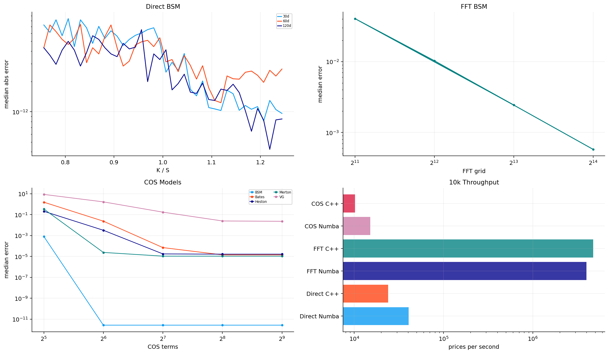
def model_start(model, q, start=None):
atm = float(np.nanmedian(q["iv_mid"]))
if model == "bsm":
p = np.array([atm])
lo = np.array([0.03])
hi = np.array([3.0])
elif model == "merton":
p = np.array([atm, 0.40, -0.04, 0.20])
lo = np.array([0.03, 0.0, -1.0, 0.01])
hi = np.array([3.0, 8.0, 1.0, 2.0])
elif model == "vg":
p = np.array([atm, -0.05, 0.20])
lo = np.array([0.03, -1.50, 0.01])
hi = np.array([3.0, 1.50, 3.0])
elif model == "heston":
v = atm * atm
p = np.array([v, 2.0, v, 0.60, -0.50])
lo = np.array([1e-5, 0.05, 1e-5, 0.02, -0.999])
hi = np.array([4.0, 12.0, 4.0, 4.0, 0.999])
else:
v = atm * atm
p = np.array([v, 2.0, v, 0.60, -0.50, 0.30, -0.04, 0.20])
lo = np.array([1e-5, 0.05, 1e-5, 0.02, -0.999, 0.0, -1.0, 0.01])
hi = np.array([4.0, 12.0, 4.0, 4.0, 0.999, 8.0, 1.0, 2.0])
if start is not None and len(start) == len(p) and np.all(np.isfinite(start)):
p = np.asarray(start, dtype=float)
return np.clip(p, lo, hi), lo, hi
def model_id(model):
return {"bsm": 0, "merton": 1, "vg": 2, "heston": 3, "bates": 4}[model]
def param_valid(model, p):
if model == "vg":
return bool(p[0] > 0 and p[2] > 0 and 1.0 - p[1] * p[2] - 0.5 * p[0] * p[0] * p[2] > 0.0)
return bool(np.all(np.isfinite(p)))def price_with_cos(model, p, q, n_terms=144, width=12.0):
return cos_group_price(model, p, q, n_terms=n_terms, width=width, engine="numba")
def price_with_groups(model, p, groups, n_rows, n_terms=144, width=12.0):
return cos_group_values(model, p, groups, n_rows, n_terms=n_terms, width=width, engine="numba")
def fit_one_date(q, model, start=None, max_nfev=55, n_terms=144, width=12.0):
t0 = time.perf_counter()
p0, lo, hi = model_start(model, q, start)
target = q["mid"].to_numpy(float)
scale = q["calib_scale_px"].to_numpy(float) / np.sqrt(q["obs_weight"].to_numpy(float))
groups = cos_groups(q)
def residual(p):
if not param_valid(model, p):
return np.full_like(target, 1e6)
px = price_with_groups(model, p, groups, len(q), n_terms=n_terms, width=width)
reg = []
if model in {"heston", "bates"}:
reg.append(0.02 * max(p[3] - 2.5, 0.0))
if model == "bates":
reg.append(0.02 * max(p[5] - 4.0, 0.0))
return np.r_[(px - target) / scale, np.asarray(reg)] if reg else (px - target) / scale
starts = [p0]
if model in {"heston", "bates"}:
starts.append(np.clip(p0 * np.r_[1.05, 0.70, 1.0, 0.85, 1.0, np.ones(max(0, len(p0) - 5))], lo, hi))
best = None
for guess in starts:
res = optimize.least_squares(residual, guess, bounds=(lo, hi), max_nfev=max_nfev, xtol=1e-7, ftol=1e-7, gtol=1e-7)
loss = float(np.nanmean(res.fun ** 2))
if best is None or loss < best[0]:
best = (loss, res)
res = best[1]
px = price_with_groups(model, res.x, groups, len(q), n_terms=n_terms, width=width)
raw = px - target
half = q["calib_scale_px"].to_numpy(float)
inside = (px >= q["bid"].to_numpy(float)) & (px <= q["ask"].to_numpy(float))
otm_put = q["option_type"].astype(str).str.lower().str.startswith("p").to_numpy() & (q["moneyness"].to_numpy(float) <= 0.90)
short = q["dte_days"].to_numpy(float) <= 30.0
row = {"model": model, "date": q["date"].iloc[0], "success": bool(res.success or np.sqrt(best[0]) < 5.0), "nfev": int(res.nfev), "runtime_sec": time.perf_counter() - t0, "quotes": len(q), "weighted_price_rmse": float(np.sqrt(np.nanmean(((px - target) / scale) ** 2))), "median_abs_price_error": float(np.nanmedian(np.abs(raw))), "weighted_iv_rmse": float(np.sqrt(np.nanmean((raw / np.maximum(q["vega"].abs().fillna(1.0).to_numpy(float), 1e-6)) ** 2))), "bid_ask_hit_rate": float(np.mean(inside)), "otm_put_rmse": float(np.sqrt(np.nanmean(((px[otm_put] - target[otm_put]) / scale[otm_put]) ** 2))) if otm_put.any() else np.nan, "short_maturity_rmse": float(np.sqrt(np.nanmean(((px[short] - target[short]) / scale[short]) ** 2))) if short.any() else np.nan}
for i, val in enumerate(res.x):
row[f"p{i}"] = float(val)
fit = q[["date", "expiry", "strike", "option_type", "spot", "tau", "dte_days", "moneyness", "log_moneyness", "dividend_yield", "mid", "bid", "ask", "calib_scale_px", "obs_weight"]].copy()
fit["model"] = model
fit["model_price"] = px
fit["price_residual"] = raw
return row, fit, res.xdef fit_dates(quotes, models, dates, cache_path, settings, max_nfev=55, n_terms=144, width=12.0, min_quotes=120):
if cache_path.exists() and same_settings(cache_path, settings):
params = pd.read_parquet(cache_path)
fit = pd.read_parquet(Path(str(cache_path).replace("_fits.parquet", "_fit_prices.parquet")))
return params, fit
rows = []
fits = []
last = {}
q = quotes.copy()
q["date"] = pd.to_datetime(q["date"]).dt.normalize()
for model in models:
for d in dates:
day = q[q["date"].eq(pd.Timestamp(d).normalize())].copy()
if len(day) < min_quotes:
continue
row, fit, params = fit_one_date(day, model, start=last.get(model), max_nfev=max_nfev, n_terms=n_terms, width=width)
rows.append(row)
fits.append(fit)
if row["success"]:
last[model] = params
params = pd.DataFrame(rows)
fit = pd.concat(fits, ignore_index=True) if fits else pd.DataFrame()
params.to_parquet(cache_path, index=False)
fit.to_parquet(Path(str(cache_path).replace("_fits.parquet", "_fit_prices.parquet")), index=False)
write_meta(cache_path, settings, len(params))
return params, fitbsm_cache = cache_dir / "spx_bsm_daily_fits.parquet"
bsm_settings = {"models": ["bsm"], "carry": clean_settings["carry"], "pricing_q": "row dividend_yield v2", "pricing_engine": "grouped_cos_numba_v4", "dates": int(len(daily_dates)), "quotes": int(len(calibration_quotes)), "n_terms": 128, "width": 12.0}
bsm_daily_fits, bsm_fit_prices = fit_dates(calibration_quotes, ["bsm"], daily_dates, bsm_cache, bsm_settings, max_nfev=35, n_terms=128, width=12.0, min_quotes=120)
bsm_summary = bsm_daily_fits.groupby("model", as_index=False).agg(dates=("date", "nunique"), quotes=("quotes", "sum"), success_rate=("success", "mean"), weighted_price_rmse=("weighted_price_rmse", "mean"), median_abs_price_error=("median_abs_price_error", "median"), bid_ask_hit_rate=("bid_ask_hit_rate", "mean"), otm_put_rmse=("otm_put_rmse", "mean"), runtime_sec=("runtime_sec", "sum"))
display(model_10k_certificate[model_10k_certificate["model"].eq("BSM")].round(8))
display(bsm_summary.round(6))| model | rows | direct_numba_runtime | direct_cpp_runtime | direct_speedup_cpp_vs_numba | direct_implementation_median_diff | fft_numba_runtime | fft_cpp_runtime | fft_speedup_cpp_vs_numba | fft_implementation_median_diff | numba_runtime | cpp_runtime | speedup_cpp_vs_numba | numba_reference_error | cpp_reference_error | implementation_max_diff | implementation_median_diff | numba_prices_per_sec | cpp_prices_per_sec | |
|---|---|---|---|---|---|---|---|---|---|---|---|---|---|---|---|---|---|---|---|
| 0 | BSM | 10000 | 0.241967 | 0.365602 | 0.661831 | 0.000000 | 0.001295 | 0.001345 | 0.962599 | 0.000000 | 0.351708 | 0.537497 | 0.654343 | 0.000000 | 0.000000 | 0.000000 | 0.000000 | 28,432.701360 | 18,604.744619 |
| model | dates | quotes | success_rate | weighted_price_rmse | median_abs_price_error | bid_ask_hit_rate | otm_put_rmse | runtime_sec | |
|---|---|---|---|---|---|---|---|---|---|
| 0 | bsm | 505 | 85850 | 1.000000 | 259.511954 | 8.697427 | 0.036808 | 359.590318 | 26.777009 |
bsm_month = bsm_daily_fits.assign(month=bsm_daily_fits["date"].dt.to_period("M").dt.to_timestamp("M")).groupby("month", observed=True).agg(
rmse=("weighted_price_rmse", "median"),
rmse_lo=("weighted_price_rmse", lambda v: np.nanquantile(v, 0.25)),
rmse_hi=("weighted_price_rmse", lambda v: np.nanquantile(v, 0.75)),
hit=("bid_ask_hit_rate", "median"),
sigma=("p0", "median"),
).reset_index()
fig, axes = plt.subplots(1, 3, figsize=(15, 4.2), sharex=True)
axes[0].plot(bsm_month["month"], bsm_month["rmse"], color=palette[0], lw=1.4)
axes[0].fill_between(bsm_month["month"], bsm_month["rmse_lo"].to_numpy(float), bsm_month["rmse_hi"].to_numpy(float), color=palette[0], alpha=0.16)
axes[0].set_title("BSM RMSE")
axes[0].set_ylabel("spread scaled")
axes[1].plot(bsm_month["month"], bsm_month["hit"], color=palette[3], lw=1.4)
axes[1].set_title("BSM Bid Ask Fit")
axes[1].set_ylabel("hit rate")
axes[2].plot(bsm_month["month"], bsm_month["sigma"], color=palette[6], lw=1.4)
axes[2].set_title("BSM Volatility")
axes[2].set_ylabel("sigma")
for ax in axes:
ax.grid(True, alpha=0.20)
fig.tight_layout(pad=1.25, h_pad=1.0, w_pad=1.0)
plt.show()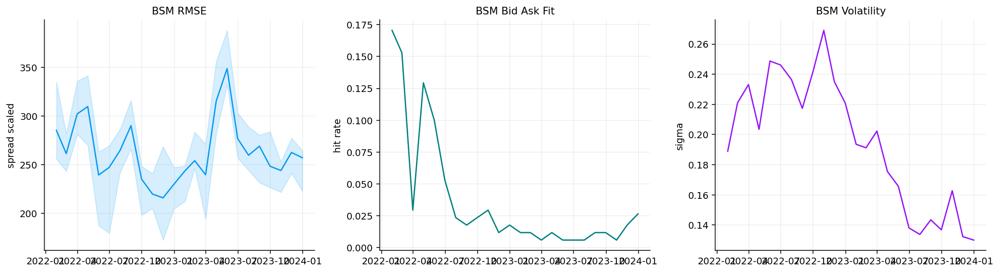
jump_cache = cache_dir / "spx_jump_daily_fits.parquet"
jump_settings = {"models": ["merton", "vg"], "carry": clean_settings["carry"], "pricing_q": "row dividend_yield v2", "pricing_engine": "grouped_cos_numba_v4", "dates": int(len(daily_dates)), "quotes": int(len(calibration_quotes)), "n_terms": 144, "width": 14.0}
jump_daily_fits, jump_fit_prices = fit_dates(calibration_quotes, ["merton", "vg"], daily_dates, jump_cache, jump_settings, max_nfev=55, n_terms=144, width=14.0, min_quotes=120)
jump_summary = jump_daily_fits.groupby("model", as_index=False).agg(dates=("date", "nunique"), quotes=("quotes", "sum"), success_rate=("success", "mean"), weighted_price_rmse=("weighted_price_rmse", "mean"), median_abs_price_error=("median_abs_price_error", "median"), bid_ask_hit_rate=("bid_ask_hit_rate", "mean"), otm_put_rmse=("otm_put_rmse", "mean"), runtime_sec=("runtime_sec", "sum")).sort_values("weighted_price_rmse")
display(jump_summary.round(6))
display(jump_daily_fits.sort_values("weighted_price_rmse", ascending=False).iloc[:10].round(6))
best_jump = str(jump_summary[jump_summary["success_rate"].ge(0.70)].sort_values("weighted_price_rmse").iloc[0]["model"])
display(pd.DataFrame([{"best_jump_model": best_jump}]))| model | dates | quotes | success_rate | weighted_price_rmse | median_abs_price_error | bid_ask_hit_rate | otm_put_rmse | runtime_sec | |
|---|---|---|---|---|---|---|---|---|---|
| 0 | merton | 505 | 85850 | 0.998020 | 82.246634 | 2.494583 | 0.089109 | 93.947641 | 193.025027 |
| 1 | vg | 505 | 85850 | 1.000000 | 94.209852 | 2.503663 | 0.075294 | 99.628586 | 115.154556 |
C:\Users\Lenovo\AppData\Local\Temp\ipykernel_6324\239604017.py:6: UserWarning: obj.round has no effect with datetime, timedelta, or period dtypes. Use obj.dt.round(...) instead.
display(jump_daily_fits.sort_values("weighted_price_rmse", ascending=False).iloc[:10].round(6))| model | date | success | nfev | runtime_sec | quotes | weighted_price_rmse | median_abs_price_error | weighted_iv_rmse | bid_ask_hit_rate | otm_put_rmse | short_maturity_rmse | p0 | p1 | p2 | p3 | |
|---|---|---|---|---|---|---|---|---|---|---|---|---|---|---|---|---|
| 665 | vg | 2022-08-18 | True | 7 | 0.210319 | 170 | 163.334090 | 2.694960 | 3.403495 | 0.011765 | 204.813171 | 212.152087 | 0.181917 | -0.291209 | 0.187167 | NaN |
| 995 | vg | 2023-12-08 | True | 7 | 0.209688 | 170 | 160.204099 | 3.386074 | 3.272469 | 0.035294 | 187.251462 | 262.957350 | 0.127854 | -0.091244 | 0.389745 | NaN |
| 1002 | vg | 2023-12-19 | True | 7 | 0.211455 | 170 | 157.978354 | 2.234045 | 2.328758 | 0.017647 | 183.163199 | 182.979426 | 0.128970 | -0.092585 | 0.419933 | NaN |
| 670 | vg | 2022-08-25 | True | 7 | 0.229664 | 170 | 156.134137 | 2.312893 | 3.359722 | 0.035294 | 212.298744 | 183.053384 | 0.184711 | -0.330073 | 0.191669 | NaN |
| 660 | vg | 2022-08-11 | True | 9 | 0.328608 | 170 | 153.320621 | 2.939325 | 2.811435 | 0.058824 | 222.421212 | 201.796279 | 0.192585 | -0.284953 | 0.163892 | NaN |
| 596 | vg | 2022-05-10 | True | 9 | 0.458135 | 170 | 152.716366 | 4.497558 | 3.177430 | 0.023529 | 64.493356 | 243.627709 | 0.220200 | -0.525185 | 0.172866 | NaN |
| 847 | vg | 2023-05-09 | True | 7 | 0.213213 | 170 | 151.725643 | 1.642336 | 2.897515 | 0.023529 | 197.321419 | 249.815100 | 0.143208 | -0.243719 | 0.283519 | NaN |
| 342 | merton | 2023-05-09 | True | 16 | 0.315952 | 170 | 151.330296 | 2.702279 | 3.617529 | 0.047059 | 207.501310 | 244.393797 | 0.107976 | 0.704891 | -0.156759 | 0.110653 |
| 974 | vg | 2023-11-08 | True | 8 | 0.239533 | 170 | 151.113849 | 1.663989 | 2.603671 | 0.035294 | 166.062718 | 213.267649 | 0.129839 | -0.136882 | 0.345958 | NaN |
| 591 | vg | 2022-05-03 | True | 8 | 0.239312 | 170 | 148.505078 | 2.854581 | 2.458128 | 0.182353 | 87.793288 | 220.683174 | 0.195575 | -0.474294 | 0.196225 | NaN |
| best_jump_model | |
|---|---|
| 0 | merton |
merton_month = jump_daily_fits[jump_daily_fits["model"].eq("merton")].assign(month=lambda x: x["date"].dt.to_period("M").dt.to_timestamp("M")).groupby("month", observed=True).agg(
rmse=("weighted_price_rmse", "median"),
rmse_lo=("weighted_price_rmse", lambda v: np.nanquantile(v, 0.25)),
rmse_hi=("weighted_price_rmse", lambda v: np.nanquantile(v, 0.75)),
tail=("otm_put_rmse", "median"),
lam=("p1", "median"),
muj=("p2", "median"),
).reset_index()
merton_resid = jump_fit_prices[jump_fit_prices["model"].eq("merton")].copy()
merton_resid["scaled_residual"] = merton_resid["price_residual"] / merton_resid["calib_scale_px"].clip(lower=1e-6)
merton_resid["log_bucket"] = pd.cut(merton_resid["log_moneyness"], [-0.45, -0.30, -0.20, -0.12, -0.06, 0.0, 0.06, 0.12, 0.20, 0.30, 0.45])
merton_smile = merton_resid.groupby("log_bucket", observed=True).agg(x=("log_moneyness", "median"), med=("scaled_residual", "median"), lo=("scaled_residual", lambda v: np.nanquantile(v, 0.25)), hi=("scaled_residual", lambda v: np.nanquantile(v, 0.75))).reset_index()
display(model_10k_certificate[model_10k_certificate["model"].eq("Merton")].round(8))
fig, axes = plt.subplots(2, 2, figsize=(15, 8.4))
axes[0, 0].plot(merton_month["month"], merton_month["rmse"], color=palette[0], lw=1.4)
axes[0, 0].fill_between(merton_month["month"], merton_month["rmse_lo"].to_numpy(float), merton_month["rmse_hi"].to_numpy(float), color=palette[0], alpha=0.16)
axes[0, 0].set_title("Merton RMSE")
axes[0, 0].set_ylabel("spread scaled")
axes[0, 1].plot(merton_month["month"], merton_month["lam"], color=palette[3], lw=1.4, label="lambda")
axes[0, 1].plot(merton_month["month"], merton_month["muj"], color=palette[6], lw=1.2, label="jump mean")
axes[0, 1].set_title("Merton Parameters")
axes[0, 1].legend(**legend_kw)
axes[1, 0].plot(merton_smile["x"], merton_smile["med"], color=palette[0], lw=1.4)
axes[1, 0].fill_between(merton_smile["x"].to_numpy(float), merton_smile["lo"].to_numpy(float), merton_smile["hi"].to_numpy(float), color=palette[0], alpha=0.16)
axes[1, 0].axhline(0.0, color="black", lw=0.7)
axes[1, 0].set_xlabel("log forward moneyness")
axes[1, 0].set_ylabel("residual / half spread")
axes[1, 0].set_title("Merton Residual")
axes[1, 1].plot(merton_month["month"], merton_month["tail"], color=palette[6], lw=1.4)
axes[1, 1].set_title("Merton Tail Error")
axes[1, 1].set_ylabel("OTM put RMSE")
for ax in axes.ravel():
ax.grid(True, alpha=0.20)
fig.tight_layout(pad=1.25, h_pad=1.0, w_pad=1.0)
plt.show()| model | rows | direct_numba_runtime | direct_cpp_runtime | direct_speedup_cpp_vs_numba | direct_implementation_median_diff | fft_numba_runtime | fft_cpp_runtime | fft_speedup_cpp_vs_numba | fft_implementation_median_diff | numba_runtime | cpp_runtime | speedup_cpp_vs_numba | numba_reference_error | cpp_reference_error | implementation_max_diff | implementation_median_diff | numba_prices_per_sec | cpp_prices_per_sec | |
|---|---|---|---|---|---|---|---|---|---|---|---|---|---|---|---|---|---|---|---|
| 1 | Merton | 10000 | 0.242010 | 0.362098 | 0.668354 | 0.000000 | 0.001898 | 0.001703 | 1.114465 | 0.000000 | 0.468676 | 0.760388 | 0.616364 | 0.000000 | 0.000000 | 0.000000 | 0.000000 | 21,336.719898 | 13,151.185902 |
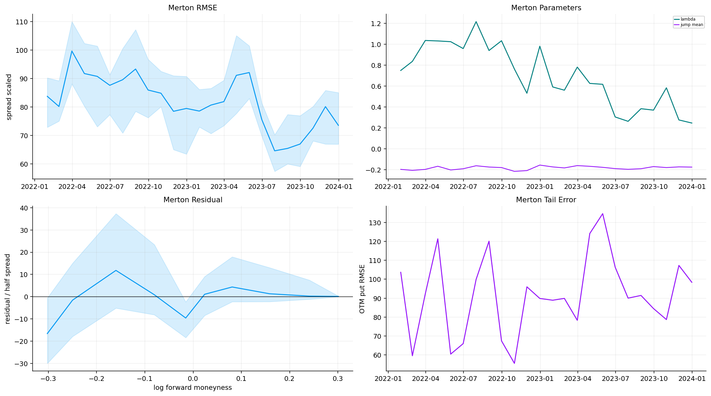
vg_month = jump_daily_fits[jump_daily_fits["model"].eq("vg")].assign(month=lambda x: x["date"].dt.to_period("M").dt.to_timestamp("M")).groupby("month", observed=True).agg(
rmse=("weighted_price_rmse", "median"),
rmse_lo=("weighted_price_rmse", lambda v: np.nanquantile(v, 0.25)),
rmse_hi=("weighted_price_rmse", lambda v: np.nanquantile(v, 0.75)),
tail=("otm_put_rmse", "median"),
theta=("p1", "median"),
nu=("p2", "median"),
).reset_index()
vg_resid = jump_fit_prices[jump_fit_prices["model"].eq("vg")].copy()
vg_resid["scaled_residual"] = vg_resid["price_residual"] / vg_resid["calib_scale_px"].clip(lower=1e-6)
vg_resid["log_bucket"] = pd.cut(vg_resid["log_moneyness"], [-0.45, -0.30, -0.20, -0.12, -0.06, 0.0, 0.06, 0.12, 0.20, 0.30, 0.45])
vg_smile = vg_resid.groupby("log_bucket", observed=True).agg(x=("log_moneyness", "median"), med=("scaled_residual", "median"), lo=("scaled_residual", lambda v: np.nanquantile(v, 0.25)), hi=("scaled_residual", lambda v: np.nanquantile(v, 0.75))).reset_index()
display(model_10k_certificate[model_10k_certificate["model"].eq("VG")].round(8))
fig, axes = plt.subplots(2, 2, figsize=(15, 8.4))
axes[0, 0].plot(vg_month["month"], vg_month["rmse"], color=palette[0], lw=1.4)
axes[0, 0].fill_between(vg_month["month"], vg_month["rmse_lo"].to_numpy(float), vg_month["rmse_hi"].to_numpy(float), color=palette[0], alpha=0.16)
axes[0, 0].set_title("VG RMSE")
axes[0, 0].set_ylabel("spread scaled")
axes[0, 1].plot(vg_month["month"], vg_month["theta"], color=palette[3], lw=1.4, label="theta")
axes[0, 1].plot(vg_month["month"], vg_month["nu"], color=palette[6], lw=1.2, label="nu")
axes[0, 1].set_title("VG Parameters")
axes[0, 1].legend(**legend_kw)
axes[1, 0].plot(vg_smile["x"], vg_smile["med"], color=palette[0], lw=1.4)
axes[1, 0].fill_between(vg_smile["x"].to_numpy(float), vg_smile["lo"].to_numpy(float), vg_smile["hi"].to_numpy(float), color=palette[0], alpha=0.16)
axes[1, 0].axhline(0.0, color="black", lw=0.7)
axes[1, 0].set_xlabel("log forward moneyness")
axes[1, 0].set_ylabel("residual / half spread")
axes[1, 0].set_title("VG Residual")
axes[1, 1].plot(vg_month["month"], vg_month["tail"], color=palette[6], lw=1.4)
axes[1, 1].set_title("VG Tail Error")
axes[1, 1].set_ylabel("OTM put RMSE")
for ax in axes.ravel():
ax.grid(True, alpha=0.20)
fig.tight_layout(pad=1.25, h_pad=1.0, w_pad=1.0)
plt.show()| model | rows | direct_numba_runtime | direct_cpp_runtime | direct_speedup_cpp_vs_numba | direct_implementation_median_diff | fft_numba_runtime | fft_cpp_runtime | fft_speedup_cpp_vs_numba | fft_implementation_median_diff | numba_runtime | cpp_runtime | speedup_cpp_vs_numba | numba_reference_error | cpp_reference_error | implementation_max_diff | implementation_median_diff | numba_prices_per_sec | cpp_prices_per_sec | |
|---|---|---|---|---|---|---|---|---|---|---|---|---|---|---|---|---|---|---|---|
| 2 | VG | 10000 | 0.245057 | 0.417685 | 0.586704 | 0.000000 | 0.002500 | 0.002110 | 1.184722 | 0.000000 | 0.662677 | 0.983042 | 0.674108 | 0.006863 | 0.006863 | 0.000000 | 0.000000 | 15,090.314780 | 10,172.502241 |
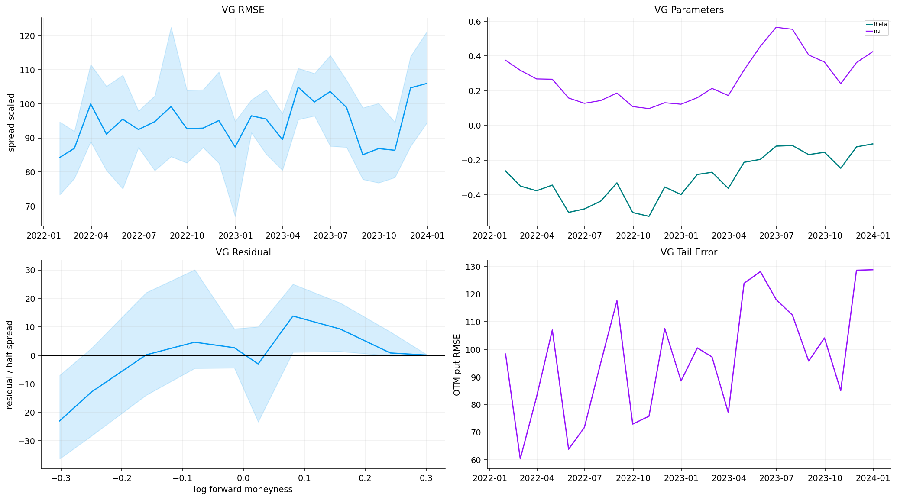
jump_plot = jump_daily_fits.copy()
jump_plot["month"] = jump_plot["date"].dt.to_period("M").dt.to_timestamp("M")
jump_month = jump_plot.groupby(["model", "month"], observed=True).agg(
rmse=("weighted_price_rmse", "median"),
rmse_lo=("weighted_price_rmse", lambda v: np.nanquantile(v, 0.25)),
rmse_hi=("weighted_price_rmse", lambda v: np.nanquantile(v, 0.75)),
otm=("otm_put_rmse", "median"),
hit=("bid_ask_hit_rate", "median"),
p1=("p1", "median"),
p2=("p2", "median"),
).reset_index()
fig, axes = plt.subplots(2, 2, figsize=(15, 8.5), sharex=True)
for i, (model, g) in enumerate(jump_month.groupby("model")):
g = g.sort_values("month")
axes[0, 0].plot(g["month"], g["rmse"], lw=1.4, color=palette[i], label=model)
axes[0, 0].fill_between(g["month"], g["rmse_lo"].to_numpy(float), g["rmse_hi"].to_numpy(float), color=palette[i], alpha=0.14)
axes[0, 1].plot(g["month"], g["otm"], lw=1.4, color=palette[i], label=model)
axes[1, 0].plot(g["month"], g["hit"], lw=1.4, color=palette[i], label=model)
y = g["p1"] if model == "merton" else g["p2"]
axes[1, 1].plot(g["month"], y, lw=1.4, color=palette[i], label=model)
axes[0, 0].set_title("Jump RMSE")
axes[0, 1].set_title("OTM Put Error")
axes[1, 0].set_title("Bid Ask Fit")
axes[1, 1].set_title("Jump Activity")
for ax in axes.ravel():
ax.legend(**legend_kw)
ax.grid(True, alpha=0.20)
fig.tight_layout(pad=1.25, h_pad=1.0, w_pad=1.0)
plt.show()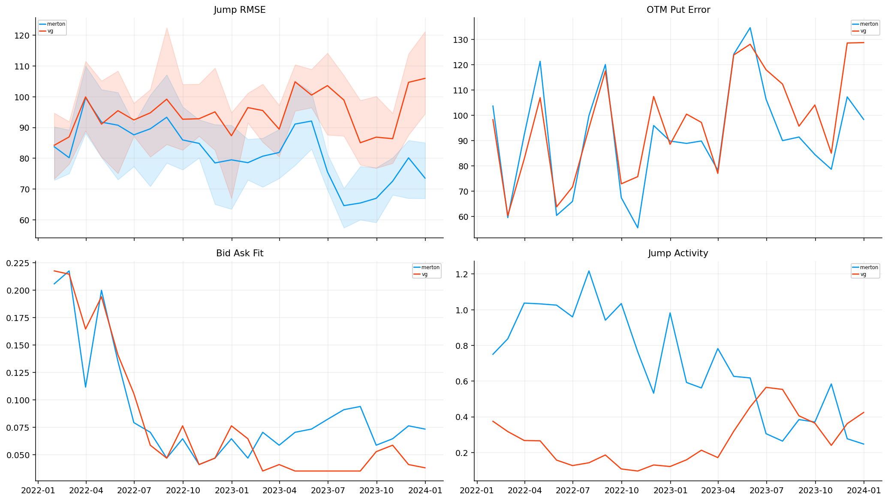
sv_cache = cache_dir / "spx_sv_daily_fits.parquet"
sv_settings = {"models": ["heston", "bates"], "carry": clean_settings["carry"], "pricing_q": "row dividend_yield v2", "pricing_engine": "grouped_cos_numba_v4", "dates": int(len(sv_dates)), "quotes": int(len(calibration_quotes)), "n_terms": 128, "width": 14.0}
sv_daily_fits, sv_fit_prices = fit_dates(calibration_quotes, ["heston", "bates"], sv_dates, sv_cache, sv_settings, max_nfev=45, n_terms=128, width=14.0, min_quotes=120)
sv_summary = sv_daily_fits.groupby("model", as_index=False).agg(dates=("date", "nunique"), quotes=("quotes", "sum"), success_rate=("success", "mean"), weighted_price_rmse=("weighted_price_rmse", "mean"), median_abs_price_error=("median_abs_price_error", "median"), bid_ask_hit_rate=("bid_ask_hit_rate", "mean"), otm_put_rmse=("otm_put_rmse", "mean"), runtime_sec=("runtime_sec", "sum")).sort_values("weighted_price_rmse")
display(sv_summary.round(6))
display(sv_daily_fits.sort_values("weighted_price_rmse", ascending=False).iloc[:10].round(6))
eligible_sv = sv_summary[sv_summary["success_rate"].ge(0.70)].copy()
best_sv = str(eligible_sv.sort_values("weighted_price_rmse").iloc[0]["model"]) if not eligible_sv.empty else str(sv_summary.sort_values(["success_rate", "weighted_price_rmse"], ascending=[False, True]).iloc[0]["model"])
display(pd.DataFrame([{"best_sv_model": best_sv, "eligible_success_rate": float(sv_summary.loc[sv_summary["model"].eq(best_sv), "success_rate"].iloc[0])}]))| model | dates | quotes | success_rate | weighted_price_rmse | median_abs_price_error | bid_ask_hit_rate | otm_put_rmse | runtime_sec | |
|---|---|---|---|---|---|---|---|---|---|
| 0 | bates | 505 | 85850 | 0.845545 | 22.253968 | 0.709802 | 0.198858 | 25.452794 | 1,450.239977 |
| 1 | heston | 505 | 85850 | 0.994059 | 26.773618 | 0.897124 | 0.172673 | 32.972342 | 326.602765 |
C:\Users\Lenovo\AppData\Local\Temp\ipykernel_6324\746512219.py:6: UserWarning: obj.round has no effect with datetime, timedelta, or period dtypes. Use obj.dt.round(...) instead.
display(sv_daily_fits.sort_values("weighted_price_rmse", ascending=False).iloc[:10].round(6))| model | date | success | nfev | runtime_sec | quotes | weighted_price_rmse | median_abs_price_error | weighted_iv_rmse | bid_ask_hit_rate | otm_put_rmse | short_maturity_rmse | p0 | p1 | p2 | p3 | p4 | p5 | p6 | p7 | |
|---|---|---|---|---|---|---|---|---|---|---|---|---|---|---|---|---|---|---|---|---|
| 497 | heston | 2023-12-19 | True | 6 | 0.586175 | 170 | 60.012762 | 1.177459 | 1.584634 | 0.017647 | 62.893826 | 65.925045 | 0.008783 | 5.504903 | 0.037765 | 1.414453 | -0.494130 | NaN | NaN | NaN |
| 475 | heston | 2023-11-16 | True | 7 | 0.578256 | 170 | 57.730037 | 1.058395 | 1.595831 | 0.064706 | 75.029842 | 72.630740 | 0.012564 | 6.006610 | 0.033659 | 1.401901 | -0.555559 | NaN | NaN | NaN |
| 474 | heston | 2023-11-15 | True | 12 | 0.969748 | 170 | 54.942539 | 1.280399 | 1.576039 | 0.064706 | 64.843443 | 57.350182 | 0.012171 | 8.847593 | 0.032549 | 1.752612 | -0.532349 | NaN | NaN | NaN |
| 366 | heston | 2023-06-13 | True | 6 | 0.472399 | 170 | 54.819373 | 1.377238 | 1.730479 | 0.100000 | 54.752669 | 67.631545 | 0.014982 | 3.393271 | 0.050371 | 1.410768 | -0.601550 | NaN | NaN | NaN |
| 469 | heston | 2023-11-08 | True | 9 | 0.722593 | 170 | 54.522500 | 0.888573 | 1.325297 | 0.100000 | 69.833388 | 74.209870 | 0.014179 | 6.828548 | 0.034410 | 1.360167 | -0.597168 | NaN | NaN | NaN |
| 485 | heston | 2023-12-01 | True | 12 | 0.807562 | 170 | 53.633378 | 1.107889 | 1.523794 | 0.041176 | 66.636683 | 54.065528 | 0.011818 | 3.001820 | 0.042804 | 1.011120 | -0.555627 | NaN | NaN | NaN |
| 391 | heston | 2023-07-20 | True | 6 | 0.546153 | 170 | 50.914711 | 1.208437 | 1.568661 | 0.047059 | 56.321260 | 66.941859 | 0.014550 | 3.263525 | 0.046073 | 1.255728 | -0.627384 | NaN | NaN | NaN |
| 390 | heston | 2023-07-19 | True | 10 | 0.532014 | 170 | 49.688119 | 1.284910 | 1.984492 | 0.064706 | 63.462056 | 54.029695 | 0.013946 | 3.292915 | 0.046090 | 1.336472 | -0.571431 | NaN | NaN | NaN |
| 482 | heston | 2023-11-28 | True | 7 | 0.621867 | 170 | 49.580527 | 1.257363 | 1.537237 | 0.058824 | 55.385201 | 41.046573 | 0.011145 | 7.475346 | 0.030200 | 1.607351 | -0.545725 | NaN | NaN | NaN |
| 477 | heston | 2023-11-20 | True | 12 | 0.624698 | 170 | 49.172979 | 1.140939 | 1.487835 | 0.035294 | 58.386285 | 42.357885 | 0.011663 | 4.148268 | 0.038224 | 1.226742 | -0.546768 | NaN | NaN | NaN |
| best_sv_model | eligible_success_rate | |
|---|---|---|
| 0 | bates | 0.845545 |
heston_month = sv_daily_fits[sv_daily_fits["model"].eq("heston")].assign(month=lambda x: x["date"].dt.to_period("M").dt.to_timestamp("M")).groupby("month", observed=True).agg(
rmse=("weighted_price_rmse", "median"),
rmse_lo=("weighted_price_rmse", lambda v: np.nanquantile(v, 0.25)),
rmse_hi=("weighted_price_rmse", lambda v: np.nanquantile(v, 0.75)),
tail=("otm_put_rmse", "median"),
v0=("p0", "median"),
rho=("p4", "median"),
).reset_index()
heston_resid = sv_fit_prices[sv_fit_prices["model"].eq("heston")].copy()
heston_resid["scaled_residual"] = heston_resid["price_residual"] / heston_resid["calib_scale_px"].clip(lower=1e-6)
heston_resid["log_bucket"] = pd.cut(heston_resid["log_moneyness"], [-0.45, -0.30, -0.20, -0.12, -0.06, 0.0, 0.06, 0.12, 0.20, 0.30, 0.45])
heston_smile = heston_resid.groupby("log_bucket", observed=True).agg(x=("log_moneyness", "median"), med=("scaled_residual", "median"), lo=("scaled_residual", lambda v: np.nanquantile(v, 0.25)), hi=("scaled_residual", lambda v: np.nanquantile(v, 0.75))).reset_index()
display(model_10k_certificate[model_10k_certificate["model"].eq("Heston")].round(8))
fig, axes = plt.subplots(2, 2, figsize=(15, 8.4))
axes[0, 0].plot(heston_month["month"], heston_month["rmse"], color=palette[0], lw=1.4)
axes[0, 0].fill_between(heston_month["month"], heston_month["rmse_lo"].to_numpy(float), heston_month["rmse_hi"].to_numpy(float), color=palette[0], alpha=0.16)
axes[0, 0].set_title("Heston RMSE")
axes[0, 0].set_ylabel("spread scaled")
axes[0, 1].plot(heston_month["month"], heston_month["v0"], color=palette[3], lw=1.4, label="v0")
axes[0, 1].plot(heston_month["month"], heston_month["rho"], color=palette[6], lw=1.2, label="rho")
axes[0, 1].set_title("Heston Parameters")
axes[0, 1].legend(**legend_kw)
axes[1, 0].plot(heston_smile["x"], heston_smile["med"], color=palette[0], lw=1.4)
axes[1, 0].fill_between(heston_smile["x"].to_numpy(float), heston_smile["lo"].to_numpy(float), heston_smile["hi"].to_numpy(float), color=palette[0], alpha=0.16)
axes[1, 0].axhline(0.0, color="black", lw=0.7)
axes[1, 0].set_xlabel("log forward moneyness")
axes[1, 0].set_ylabel("residual / half spread")
axes[1, 0].set_title("Heston Residual")
axes[1, 1].plot(heston_month["month"], heston_month["tail"], color=palette[6], lw=1.4)
axes[1, 1].set_title("Heston Tail Error")
axes[1, 1].set_ylabel("OTM put RMSE")
for ax in axes.ravel():
ax.grid(True, alpha=0.20)
fig.tight_layout(pad=1.25, h_pad=1.0, w_pad=1.0)
plt.show()| model | rows | direct_numba_runtime | direct_cpp_runtime | direct_speedup_cpp_vs_numba | direct_implementation_median_diff | fft_numba_runtime | fft_cpp_runtime | fft_speedup_cpp_vs_numba | fft_implementation_median_diff | numba_runtime | cpp_runtime | speedup_cpp_vs_numba | numba_reference_error | cpp_reference_error | implementation_max_diff | implementation_median_diff | numba_prices_per_sec | cpp_prices_per_sec | |
|---|---|---|---|---|---|---|---|---|---|---|---|---|---|---|---|---|---|---|---|
| 3 | Heston | 10000 | 0.245864 | 0.437394 | 0.562110 | 0.000000 | 0.003726 | 0.007834 | 0.475631 | 0.000000 | 0.978928 | 1.518277 | 0.644763 | 0.000000 | 0.000000 | 0.000000 | 0.000000 | 10,215.251698 | 6,586.413415 |
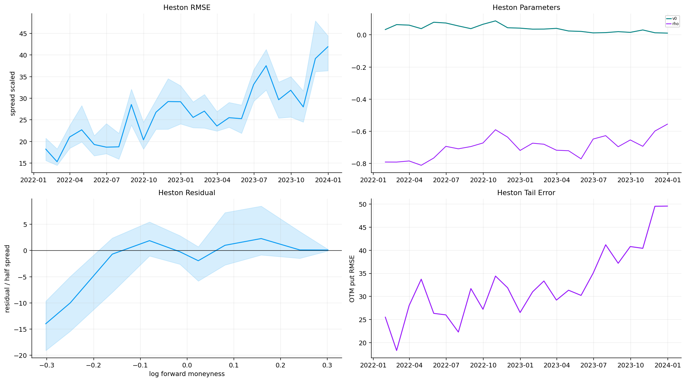
bates_month = sv_daily_fits[sv_daily_fits["model"].eq("bates")].assign(month=lambda x: x["date"].dt.to_period("M").dt.to_timestamp("M")).groupby("month", observed=True).agg(
rmse=("weighted_price_rmse", "median"),
rmse_lo=("weighted_price_rmse", lambda v: np.nanquantile(v, 0.25)),
rmse_hi=("weighted_price_rmse", lambda v: np.nanquantile(v, 0.75)),
tail=("otm_put_rmse", "median"),
rho=("p4", "median"),
lam=("p5", "median"),
).reset_index()
bates_resid = sv_fit_prices[sv_fit_prices["model"].eq("bates")].copy()
bates_resid["scaled_residual"] = bates_resid["price_residual"] / bates_resid["calib_scale_px"].clip(lower=1e-6)
bates_resid["log_bucket"] = pd.cut(bates_resid["log_moneyness"], [-0.45, -0.30, -0.20, -0.12, -0.06, 0.0, 0.06, 0.12, 0.20, 0.30, 0.45])
bates_smile = bates_resid.groupby("log_bucket", observed=True).agg(x=("log_moneyness", "median"), med=("scaled_residual", "median"), lo=("scaled_residual", lambda v: np.nanquantile(v, 0.25)), hi=("scaled_residual", lambda v: np.nanquantile(v, 0.75))).reset_index()
display(model_10k_certificate[model_10k_certificate["model"].eq("Bates")].round(8))
fig, axes = plt.subplots(2, 2, figsize=(15, 8.4))
axes[0, 0].plot(bates_month["month"], bates_month["rmse"], color=palette[0], lw=1.4)
axes[0, 0].fill_between(bates_month["month"], bates_month["rmse_lo"].to_numpy(float), bates_month["rmse_hi"].to_numpy(float), color=palette[0], alpha=0.16)
axes[0, 0].set_title("Bates RMSE")
axes[0, 0].set_ylabel("spread scaled")
axes[0, 1].plot(bates_month["month"], bates_month["rho"], color=palette[3], lw=1.4, label="rho")
axes[0, 1].plot(bates_month["month"], bates_month["lam"], color=palette[6], lw=1.2, label="jump lambda")
axes[0, 1].set_title("Bates Parameters")
axes[0, 1].legend(**legend_kw)
axes[1, 0].plot(bates_smile["x"], bates_smile["med"], color=palette[0], lw=1.4)
axes[1, 0].fill_between(bates_smile["x"].to_numpy(float), bates_smile["lo"].to_numpy(float), bates_smile["hi"].to_numpy(float), color=palette[0], alpha=0.16)
axes[1, 0].axhline(0.0, color="black", lw=0.7)
axes[1, 0].set_xlabel("log forward moneyness")
axes[1, 0].set_ylabel("residual / half spread")
axes[1, 0].set_title("Bates Residual")
axes[1, 1].plot(bates_month["month"], bates_month["tail"], color=palette[6], lw=1.4)
axes[1, 1].set_title("Bates Tail Error")
axes[1, 1].set_ylabel("OTM put RMSE")
for ax in axes.ravel():
ax.grid(True, alpha=0.20)
fig.tight_layout(pad=1.25, h_pad=1.0, w_pad=1.0)
plt.show()| model | rows | direct_numba_runtime | direct_cpp_runtime | direct_speedup_cpp_vs_numba | direct_implementation_median_diff | fft_numba_runtime | fft_cpp_runtime | fft_speedup_cpp_vs_numba | fft_implementation_median_diff | numba_runtime | cpp_runtime | speedup_cpp_vs_numba | numba_reference_error | cpp_reference_error | implementation_max_diff | implementation_median_diff | numba_prices_per_sec | cpp_prices_per_sec | |
|---|---|---|---|---|---|---|---|---|---|---|---|---|---|---|---|---|---|---|---|
| 4 | Bates | 10000 | 0.265325 | 0.498537 | 0.532208 | 0.000000 | 0.003509 | 0.005964 | 0.588336 | 0.000000 | 0.849236 | 2.176017 | 0.390271 | 0.000000 | 0.000000 | 0.000000 | 0.000000 | 11,775.282857 | 4,595.551488 |
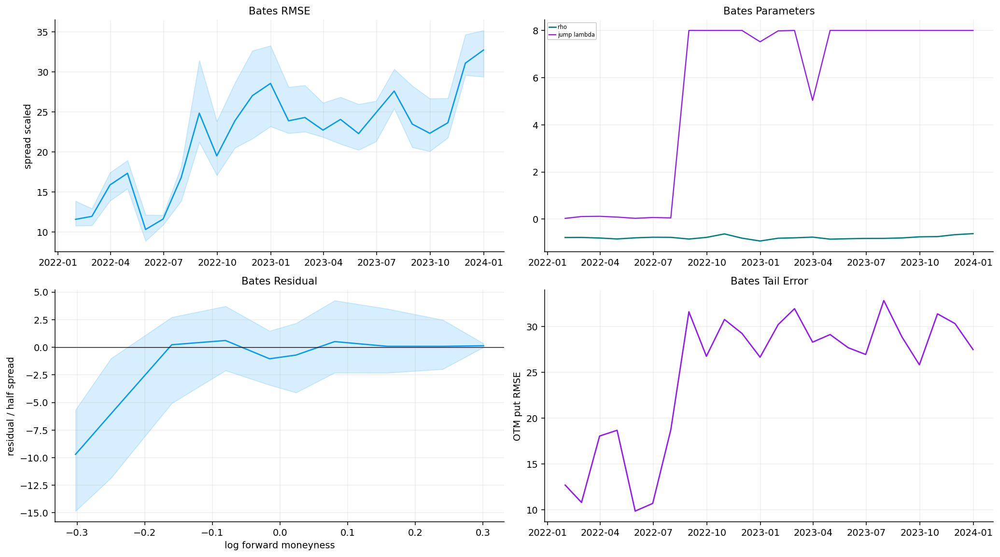
sv_plot = sv_daily_fits.copy()
sv_plot["month"] = sv_plot["date"].dt.to_period("M").dt.to_timestamp("M")
sv_month = sv_plot.groupby(["model", "month"], observed=True).agg(
rmse=("weighted_price_rmse", "median"),
rmse_lo=("weighted_price_rmse", lambda v: np.nanquantile(v, 0.25)),
rmse_hi=("weighted_price_rmse", lambda v: np.nanquantile(v, 0.75)),
otm=("otm_put_rmse", "median"),
hit=("bid_ask_hit_rate", "median"),
v0=("p0", "median"),
rho=("p4", "median"),
jump=("p5", "median"),
).reset_index()
fig, axes = plt.subplots(2, 2, figsize=(15, 8.5), sharex=True)
for i, (model, g) in enumerate(sv_month.groupby("model")):
g = g.sort_values("month")
axes[0, 0].plot(g["month"], g["rmse"], lw=1.4, color=palette[i], label=model)
axes[0, 0].fill_between(g["month"], g["rmse_lo"].to_numpy(float), g["rmse_hi"].to_numpy(float), color=palette[i], alpha=0.14)
axes[0, 1].plot(g["month"], g["otm"], lw=1.4, color=palette[i], label=model)
axes[1, 0].plot(g["month"], g["hit"], lw=1.4, color=palette[i], label=model)
y = g["jump"] if model == "bates" and g["jump"].notna().any() else g["rho"]
axes[1, 1].plot(g["month"], y, lw=1.4, color=palette[i], label=model)
axes[0, 0].set_title("SV RMSE")
axes[0, 1].set_title("OTM Put Error")
axes[1, 0].set_title("Bid Ask Fit")
axes[1, 1].set_title("SV Parameters")
for ax in axes.ravel():
ax.legend(**legend_kw)
ax.grid(True, alpha=0.20)
fig.tight_layout(pad=1.25, h_pad=1.0, w_pad=1.0)
plt.show()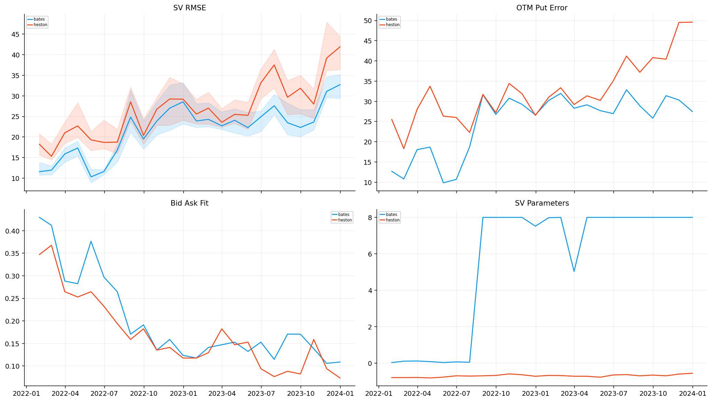
common_dates = sorted(
set(pd.to_datetime(bsm_daily_fits["date"]).dt.normalize())
& set(pd.to_datetime(jump_daily_fits[jump_daily_fits["model"].eq(best_jump)]["date"]).dt.normalize())
& set(pd.to_datetime(sv_daily_fits[sv_daily_fits["model"].eq(best_sv)]["date"]).dt.normalize())
)
final_daily_all = pd.concat([
bsm_daily_fits,
jump_daily_fits[jump_daily_fits["model"].eq(best_jump)],
sv_daily_fits[sv_daily_fits["model"].eq(best_sv)],
], ignore_index=True)
final_daily = final_daily_all[final_daily_all["date"].isin(common_dates)].copy()
final_model_comparison = final_daily.groupby("model", as_index=False).agg(dates=("date", "nunique"), quotes=("quotes", "sum"), success_rate=("success", "mean"), weighted_price_rmse=("weighted_price_rmse", "mean"), median_abs_price_error=("median_abs_price_error", "median"), bid_ask_hit_rate=("bid_ask_hit_rate", "mean"), otm_put_rmse=("otm_put_rmse", "mean"), runtime_sec=("runtime_sec", "sum")).sort_values("weighted_price_rmse")
display(pd.DataFrame([{"common_dates": len(common_dates), "start": min(common_dates), "end": max(common_dates)}]))
display(final_model_comparison.round(6))| common_dates | start | end | |
|---|---|---|---|
| 0 | 505 | 2022-01-03 | 2023-12-29 |
| model | dates | quotes | success_rate | weighted_price_rmse | median_abs_price_error | bid_ask_hit_rate | otm_put_rmse | runtime_sec | |
|---|---|---|---|---|---|---|---|---|---|
| 0 | bates | 505 | 85850 | 0.845545 | 22.253968 | 0.709802 | 0.198858 | 25.452794 | 1,450.239977 |
| 2 | merton | 505 | 85850 | 0.998020 | 82.246634 | 2.494583 | 0.089109 | 93.947641 | 193.025027 |
| 1 | bsm | 505 | 85850 | 1.000000 | 259.511954 | 8.697427 | 0.036808 | 359.590318 | 26.777009 |
fig, axes = plt.subplots(1, 4, figsize=(17, 4.5))
axes[0].bar(final_model_comparison["model"], final_model_comparison["weighted_price_rmse"], color=palette[:len(final_model_comparison)])
axes[0].set_ylabel("weighted RMSE")
axes[0].set_title("RMSE")
axes[1].bar(final_model_comparison["model"], final_model_comparison["bid_ask_hit_rate"], color=palette[:len(final_model_comparison)])
axes[1].set_ylabel("hit rate")
axes[1].set_title("Bid/Ask Fit")
axes[2].bar(final_model_comparison["model"], final_model_comparison["otm_put_rmse"], color=palette[:len(final_model_comparison)])
axes[2].set_ylabel("OTM put RMSE")
axes[2].set_title("Tail Error")
axes[3].scatter(final_model_comparison["runtime_sec"], final_model_comparison["weighted_price_rmse"], s=80, color=palette[:len(final_model_comparison)])
for _, row in final_model_comparison.iterrows():
axes[3].annotate(row["model"], (row["runtime_sec"], row["weighted_price_rmse"]), fontsize=7, xytext=(4, 4), textcoords="offset points")
axes[3].set_xscale("log")
axes[3].set_xlabel("seconds")
axes[3].set_ylabel("weighted RMSE")
axes[3].set_title("Runtime Error")
fig.tight_layout(pad=1.25, h_pad=1.0, w_pad=1.0)
plt.show()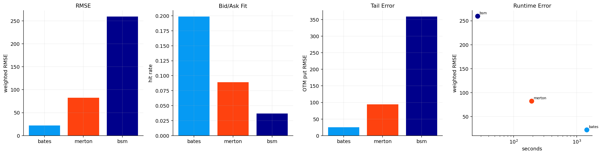
final_fit_prices = pd.concat([
bsm_fit_prices[bsm_fit_prices["date"].isin(common_dates)],
jump_fit_prices[jump_fit_prices["model"].eq(best_jump) & jump_fit_prices["date"].isin(common_dates)],
sv_fit_prices[sv_fit_prices["model"].eq(best_sv) & sv_fit_prices["date"].isin(common_dates)],
], ignore_index=True)
residual_work = final_fit_prices.copy()
residual_work["scaled_residual"] = residual_work["price_residual"] / residual_work["calib_scale_px"].clip(lower=1e-6)
residual_work["log_bucket"] = pd.cut(residual_work["log_moneyness"], [-0.45, -0.30, -0.20, -0.12, -0.06, 0.0, 0.06, 0.12, 0.20, 0.30, 0.45])
residual_work["dte_bucket"] = pd.cut(residual_work["dte_days"], [7, 14, 30, 60, 90, 120, 180])
residual_smile = residual_work.groupby(["model", "log_bucket"], observed=True).agg(x=("log_moneyness", "median"), med=("scaled_residual", "median"), lo=("scaled_residual", lambda v: np.nanquantile(v, 0.25)), hi=("scaled_residual", lambda v: np.nanquantile(v, 0.75)), rows=("scaled_residual", "size")).reset_index()
residual_term = residual_work.groupby(["model", "dte_bucket"], observed=True).agg(x=("dte_days", "median"), med=("scaled_residual", "median"), lo=("scaled_residual", lambda v: np.nanquantile(v, 0.25)), hi=("scaled_residual", lambda v: np.nanquantile(v, 0.75)), rows=("scaled_residual", "size")).reset_index()
display(residual_smile.iloc[:12].round(5))| model | log_bucket | x | med | lo | hi | rows | |
|---|---|---|---|---|---|---|---|
| 0 | bates | (-0.45, -0.3] | -0.302260 | -9.697950 | -14.840410 | -5.655810 | 2245 |
| 1 | bates | (-0.3, -0.2] | -0.249920 | -6.031760 | -11.845140 | -1.013670 | 10237 |
| 2 | bates | (-0.2, -0.12] | -0.159980 | 0.228780 | -5.073810 | 2.722390 | 10265 |
| 3 | bates | (-0.12, -0.06] | -0.080420 | 0.610510 | -2.105950 | 3.718370 | 7553 |
| 4 | bates | (-0.06, 0.0] | -0.015340 | -1.043290 | -3.421730 | 1.481420 | 12790 |
| 5 | bates | (0.0, 0.06] | 0.023910 | -0.706820 | -4.104870 | 2.180000 | 16894 |
| 6 | bates | (0.06, 0.12] | 0.080980 | 0.512120 | -2.308760 | 4.234060 | 11040 |
| 7 | bates | (0.12, 0.2] | 0.158410 | 0.087790 | -2.317150 | 3.487990 | 10366 |
| 8 | bates | (0.2, 0.3] | 0.240990 | 0.085860 | -1.983020 | 2.478890 | 4392 |
| 9 | bates | (0.3, 0.45] | 0.301130 | 0.136150 | 0.003230 | 0.345160 | 68 |
| 10 | bsm | (-0.45, -0.3] | -0.302260 | -53.663310 | -77.523140 | -28.315640 | 2245 |
| 11 | bsm | (-0.3, -0.2] | -0.249920 | -56.571760 | -82.172540 | -27.000000 | 10237 |
stress_dates = final_daily.sort_values("weighted_price_rmse", ascending=False)["date"].drop_duplicates().iloc[:3].tolist()
otm_put = residual_work[residual_work["option_type"].astype(str).str.lower().str.startswith("p") & residual_work["moneyness"].le(0.90)].groupby(["date", "model"])["scaled_residual"].median().reset_index()
stress_residual = residual_work[residual_work["date"].isin(stress_dates)].groupby(["date", "model", "log_bucket"], observed=True).agg(x=("log_moneyness", "median"), med=("scaled_residual", "median"), lo=("scaled_residual", lambda v: np.nanquantile(v, 0.25)), hi=("scaled_residual", lambda v: np.nanquantile(v, 0.75))).reset_index()
fig, axes = plt.subplots(2, 2, figsize=(15, 8.5))
for i, (model, g) in enumerate(residual_smile.groupby("model")):
axes[0, 0].plot(g["x"], g["med"], marker="o", ms=3, color=palette[i], label=model)
axes[0, 0].fill_between(g["x"].to_numpy(float), g["lo"].to_numpy(float), g["hi"].to_numpy(float), color=palette[i], alpha=0.12)
for i, (model, g) in enumerate(residual_term.groupby("model")):
axes[0, 1].plot(g["x"], g["med"], marker="o", ms=3, color=palette[i], label=model)
axes[0, 1].fill_between(g["x"].to_numpy(float), g["lo"].to_numpy(float), g["hi"].to_numpy(float), color=palette[i], alpha=0.12)
for i, (model, g) in enumerate(otm_put.groupby("model")):
axes[1, 0].plot(g["date"], g["scaled_residual"], lw=1.0, color=palette[i], label=model)
for i, ((date, model), g) in enumerate(stress_residual.groupby(["date", "model"])):
axes[1, 1].plot(g["x"], g["med"], lw=1.0, color=palette[i % len(palette)], label=f"{pd.Timestamp(date).date()} {model}")
axes[0, 0].axhline(0, color="black", lw=0.7)
axes[0, 1].axhline(0, color="black", lw=0.7)
axes[1, 1].axhline(0, color="black", lw=0.7)
axes[0, 0].set_title("Residual Smile")
axes[0, 1].set_title("Residual Term")
axes[1, 0].set_title("OTM Put Residual")
axes[1, 1].set_title("Stress Residual")
for ax in axes.ravel():
ax.legend(**legend_kw)
fig.tight_layout(pad=1.25, h_pad=1.0, w_pad=1.0)
plt.show()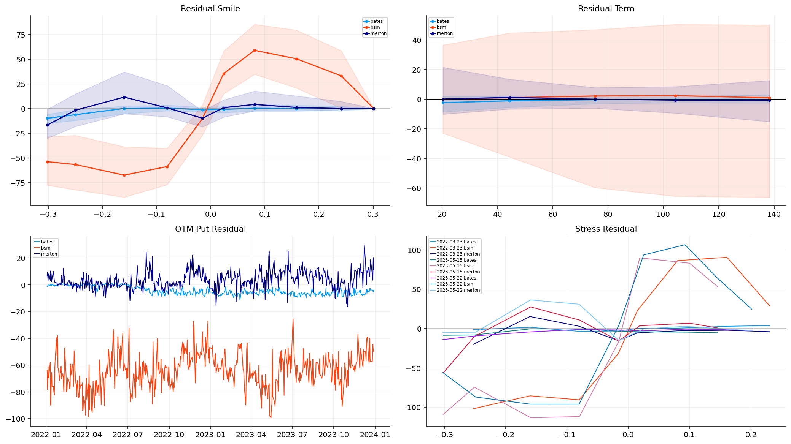
def params_from_row(model, row):
count = {"bsm": 1, "merton": 4, "vg": 3, "heston": 5, "bates": 8}[model]
return row[[f"p{i}" for i in range(count)]].to_numpy(float)
tail_dates = pd.DatetimeIndex(sorted(set(pd.to_datetime(sv_dates[::max(1, len(sv_dates)//24)]).tolist() + pd.to_datetime(stress_dates).tolist())))
tail_rows = []
density_rows = []
for d in tail_dates:
qd = calibration_quotes[calibration_quotes["date"].eq(pd.Timestamp(d).normalize())]
if qd.empty:
continue
s = float(qd["spot"].median())
r = float(qd["rate"].median())
q = float(qd["dividend_yield"].median())
x = np.linspace(np.log(s) - 0.55, np.log(s) + 0.35, 520)
for model in ["bsm", best_jump, best_sv]:
source = final_daily[final_daily["model"].eq(model)]
source = source[source["date"].le(pd.Timestamp(d).normalize())].sort_values("date")
if source.empty:
continue
p = params_from_row(model, source.iloc[-1])
den = density_from_cf(model_id(model), p, x, s, r, q, 60 / ann_days, 180.0, 1024)
area = np.trapezoid(den, x)
if area > 0:
den = den / area
rel = np.exp(x) / s
for level in [0.90, 0.85, 0.80]:
tail_rows.append({"date": pd.Timestamp(d).normalize(), "model": model, "level": level, "tail_probability": float(np.trapezoid(den[rel <= level], x[rel <= level]))})
if d in stress_dates or d == tail_dates[0] or d == tail_dates[-1]:
for xi, yi in zip(rel, den):
density_rows.append({"date": pd.Timestamp(d).normalize(), "model": model, "s_over_s0": xi, "density": yi, "dividend_yield": q})
tail_diagnostics = pd.DataFrame(tail_rows)
density_summary = pd.DataFrame(density_rows)
display(tail_diagnostics.groupby(["model", "level"])["tail_probability"].agg(["mean", "max"]).reset_index().round(6))| model | level | mean | max | |
|---|---|---|---|---|
| 0 | bates | 0.800000 | 0.026241 | 0.053461 |
| 1 | bates | 0.850000 | 0.050506 | 0.093037 |
| 2 | bates | 0.900000 | 0.095225 | 0.156473 |
| 3 | bsm | 0.800000 | 0.005277 | 0.022120 |
| 4 | bsm | 0.850000 | 0.024829 | 0.073800 |
| 5 | bsm | 0.900000 | 0.088169 | 0.179700 |
| 6 | merton | 0.800000 | 0.034291 | 0.069443 |
| 7 | merton | 0.850000 | 0.054513 | 0.101891 |
| 8 | merton | 0.900000 | 0.081787 | 0.143681 |
tail80 = tail_diagnostics[tail_diagnostics["level"].eq(0.80)].copy()
tail_term_date = tail_dates[min(len(tail_dates) - 1, len(tail_dates) // 2)] if len(tail_dates) else main_day
fig, axes = plt.subplots(2, 2, figsize=(15, 8.5))
for i, ((date, model), g) in enumerate(density_summary.groupby(["date", "model"])):
axes[0, 0].plot(g["s_over_s0"], g["density"], lw=1.0, color=palette[i % len(palette)], label=f"{pd.Timestamp(date).date()} {model}")
for i, (model, g) in enumerate(tail80.groupby("model")):
axes[0, 1].plot(g["date"], g["tail_probability"], lw=1.2, color=palette[i], label=model)
pivot_tail = tail80.pivot_table(index="date", columns="model", values="tail_probability")
if not pivot_tail.empty:
axes[1, 0].plot(pivot_tail.index, pivot_tail.max(axis=1) - pivot_tail.min(axis=1), color=palette[6], lw=1.2)
tail_term = tail_diagnostics[tail_diagnostics["date"].eq(pd.Timestamp(tail_term_date).normalize())]
for i, (model, g) in enumerate(tail_term.groupby("model")):
axes[1, 1].plot(g["level"], g["tail_probability"], marker="o", ms=3, color=palette[i], label=model)
axes[0, 0].set_title("Tail Density")
axes[0, 1].set_title("Crash Probability")
axes[1, 0].set_title("Tail Disagreement")
axes[1, 1].set_title("Tail Term")
for ax in axes.ravel():
ax.set_xlabel("date" if ax in [axes[0, 1], axes[1, 0]] else "")
ax.legend(**legend_kw)
fig.tight_layout(pad=1.25, h_pad=1.0, w_pad=1.0)
plt.show()C:\Users\Lenovo\AppData\Local\Temp\ipykernel_6324\2226895617.py:20: UserWarning: No artists with labels found to put in legend. Note that artists whose label start with an underscore are ignored when legend() is called with no argument.
ax.legend(**legend_kw)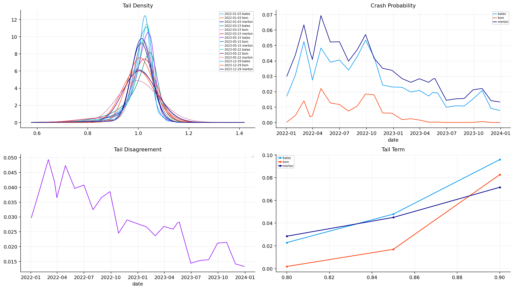
def latest_params(model, d):
source = final_daily[final_daily["model"].eq(model)]
source = source[source["date"].le(pd.Timestamp(d).normalize())].sort_values("date")
if source.empty:
return None
return params_from_row(model, source.iloc[-1])
def latest_tail_values(model, d):
source = tail_diagnostics[tail_diagnostics["model"].eq(model)]
source = source[source["date"].le(pd.Timestamp(d).normalize())].sort_values("date")
out = {0.90: 0.12, 0.85: 0.07, 0.80: 0.04}
if source.empty:
return out
last_date = source["date"].iloc[-1]
last = source[source["date"].eq(last_date)]
for _, row in last.iterrows():
out[float(row["level"])] = float(row["tail_probability"])
return out
def tail_budget(model, d, edge_ratio=0.0, relative_spread=0.0, base_bps=35.0):
source = tail_diagnostics[(tail_diagnostics["model"].eq(model)) & (tail_diagnostics["level"].eq(0.80))].sort_values("date")
source = source[source["date"].le(pd.Timestamp(d).normalize())]
if len(source) < 8:
return base_bps
hist = source["tail_probability"].tail(60)
p = float(hist.iloc[-1])
q70 = float(hist.quantile(0.70))
q85 = float(hist.quantile(0.85))
q95 = float(hist.quantile(0.95))
edge = float(edge_ratio) if np.isfinite(edge_ratio) else 0.0
spread = float(relative_spread) if np.isfinite(relative_spread) else 1.0
add = 0.0
if spread <= 0.30 and p > q70 and edge > -0.05:
add += 25.0
if spread <= 0.30 and p > q85 and edge > 0.0:
add += 40.0
if spread <= 0.30 and p > q95 and edge > 0.0:
add += 60.0
return min(base_bps + add, 120.0)
def hedge_candidates_for_date(q_by_date, d, selector, crash_level=0.85):
gated = str(selector).endswith("_gated")
base = str(selector).replace("_fixed", "").replace("_gated", "")
day = q_by_date.get(pd.Timestamp(d).normalize())
if day is None:
return pd.DataFrame()
day = day.copy()
if day.empty:
return day
if base == "fixed_delta":
day["model_price"] = day["mid"]
day["model_edge"] = 0.0
day["model_uncertainty"] = 0.0
if "delta" in day.columns and day["delta"].notna().any():
day["target_score"] = -(day["delta"].abs() - 0.25).abs() - 0.15 * day["relative_spread"]
else:
day["target_score"] = -(day["moneyness"] - 0.88).abs() - 0.15 * day["relative_spread"]
tail = latest_tail_values(best_sv, d)
else:
p_jump = latest_params(best_jump, d)
p_sv = latest_params(best_sv, d)
if p_jump is None or p_sv is None:
return day.iloc[:0]
day["jump_price"] = price_with_cos(best_jump, p_jump, day, n_terms=128, width=30.0 if best_jump == "vg" else 14.0)
day["sv_price"] = price_with_cos(best_sv, p_sv, day, n_terms=128, width=14.0)
if base == best_jump:
day["model_price"] = day["jump_price"]
tail = latest_tail_values(best_jump, d)
elif base == best_sv:
day["model_price"] = day["sv_price"]
tail = latest_tail_values(best_sv, d)
else:
day["model_price"] = 0.5 * (day["jump_price"] + day["sv_price"])
tail = latest_tail_values(best_sv, d)
robust_penalty = 0.5 * (day.get("jump_price", day["model_price"]) - day.get("sv_price", day["model_price"])).abs()
day["model_edge"] = day["model_price"] - day["mid"] - np.where(base == "model_risk", robust_penalty, 0.0)
day["model_uncertainty"] = (day["jump_price"] - day["sv_price"]).abs() / day["spot"]
day["calibration_penalty"] = 0.0
day["target_score"] = 0.0
if base == "model_risk":
day = day[day["moneyness"].le(0.93)].copy()
if day.empty:
return day
spot_v = day["spot"].clip(lower=1e-8)
mid = day["mid"].clip(lower=1e-8)
day["payoff_at_90"] = np.maximum(day["strike"] - 0.90 * spot_v, 0.0)
day["payoff_at_85"] = np.maximum(day["strike"] - 0.85 * spot_v, 0.0)
day["payoff_at_80"] = np.maximum(day["strike"] - 0.80 * spot_v, 0.0)
day["p90"] = tail[0.90]
day["p85"] = tail[0.85]
day["p80"] = tail[0.80]
day["payoff_per_premium"] = np.maximum(day["strike"] - crash_level * spot_v, 0.0) / mid
day["expected_crash_efficiency"] = day["p90"] * day["payoff_at_90"] / mid + day["p85"] * day["payoff_at_85"] / mid + day["p80"] * day["payoff_at_80"] / mid
day["edge_ratio"] = day["model_edge"] / mid
day["convexity_per_premium"] = (day["payoff_at_80"] - day["payoff_at_90"]).clip(lower=0.0) / (0.10 * spot_v * mid)
day["premium_bleed"] = mid / spot_v / np.sqrt(day["dte_days"] / ann_days)
if "calibration_penalty" not in day.columns:
day["calibration_penalty"] = 0.0
if gated:
budget_model = best_sv if base in {"fixed_delta", "model_risk"} else base
day["budget_bps"] = [
tail_budget(budget_model, d, edge_ratio=e, relative_spread=sp)
for e, sp in zip(day["edge_ratio"].to_numpy(float), day["relative_spread"].to_numpy(float))
]
else:
day["budget_bps"] = 35.0
day["hedge_score"] = (
0.45 * day["expected_crash_efficiency"]
+ 0.25 * day["edge_ratio"]
+ 0.15 * day["convexity_per_premium"]
- 0.10 * day["relative_spread"]
- 0.10 * day["premium_bleed"]
- 0.10 * day["model_uncertainty"]
+ day["target_score"]
)
day["selector"] = selector
return day.sort_values("hedge_score", ascending=False)def build_hedge_schedule(q, selectors, dates, notional=1_000_000.0, budget_bps=35.0, multiplier=100.0, spacing_days=21):
rows = []
candidates = []
last = {name: None for name in selectors}
q_by_date = {d: g for d, g in q.groupby("date", sort=False)}
for d in dates:
for selector in selectors:
if last[selector] is not None and (pd.Timestamp(d) - last[selector]).days < spacing_days:
continue
cand = hedge_candidates_for_date(q_by_date, d, selector)
if cand.empty:
continue
chosen = cand.iloc[0].copy()
price = float(chosen["ask"])
budget = notional * float(chosen.get("budget_bps", budget_bps)) / 10000.0
qty = budget / max(price * multiplier, 1e-8)
rows.append({"strategy": selector, "entry_date": pd.Timestamp(d).normalize(), "contract_key": chosen["contract_key"], "expiry": pd.Timestamp(chosen.expiry).normalize(), "strike": float(chosen.strike), "option_type": str(chosen.option_type), "quantity": qty, "label": "tail_put", "premium_budget": budget, "premium_budget_bps": float(chosen.get("budget_bps", budget_bps))})
candidates.append(chosen)
last[selector] = pd.Timestamp(d).normalize()
cands = pd.DataFrame(candidates)
sched = pd.DataFrame(rows)
return cands, sched
hedge_cols = ["date", "expiry", "option_type", "strike", "spot", "bid", "ask", "mid", "tau", "dte_days", "moneyness", "log_moneyness", "relative_spread", "rate", "dividend_yield", "delta"]
hedge_mask = clean_quotes["option_type"].astype(str).str.lower().str.startswith("p") & clean_quotes["dte_days"].between(21, 120) & clean_quotes["moneyness"].between(0.75, 0.98) & clean_quotes["relative_spread"].le(0.30)
hedge_quotes = clean_quotes.loc[hedge_mask, [c for c in hedge_cols if c in clean_quotes.columns]].copy()
hedge_quotes["contract_key"] = hedge_quotes["option_type"].astype(str) + "_" + hedge_quotes["expiry"].dt.strftime("%Y-%m-%d") + "_" + hedge_quotes["strike"].map(lambda x: f"{float(x):.6f}".rstrip("0").rstrip("."))
rebalance_dates = pd.DatetimeIndex(sorted(clean_quotes["date"].drop_duplicates()))[::21]
selectors = ["fixed_delta_fixed", f"{best_jump}_fixed", f"{best_jump}_gated", f"{best_sv}_fixed", f"{best_sv}_gated", "model_risk_fixed", "model_risk_gated"]
hedge_candidates, hedge_schedule = build_hedge_schedule(hedge_quotes, selectors, rebalance_dates, notional=1_000_000.0, budget_bps=35.0, multiplier=100.0, spacing_days=21)
display(hedge_schedule.groupby("strategy").size().rename("scheduled_trades").reset_index())
display(hedge_candidates.groupby("selector").agg(avg_score=("hedge_score", "mean"), avg_moneyness=("moneyness", "mean"), avg_dte=("dte_days", "mean"), avg_mid=("mid", "mean"), avg_budget_bps=("budget_bps", "mean"), avg_payoff_per_premium=("payoff_per_premium", "mean"), avg_edge_ratio=("edge_ratio", "mean")).reset_index().round(5))| strategy | scheduled_trades | |
|---|---|---|
| 0 | bates_fixed | 25 |
| 1 | bates_gated | 25 |
| 2 | fixed_delta_fixed | 25 |
| 3 | merton_fixed | 25 |
| 4 | merton_gated | 25 |
| 5 | model_risk_fixed | 25 |
| 6 | model_risk_gated | 25 |
| selector | avg_score | avg_moneyness | avg_dte | avg_mid | avg_budget_bps | avg_payoff_per_premium | avg_edge_ratio | |
|---|---|---|---|---|---|---|---|---|
| 0 | bates_fixed | 1.775470 | 0.910190 | 21.933330 | 9.975000 | 35.000000 | 45.980840 | 0.021530 |
| 1 | bates_gated | 1.775470 | 0.910190 | 21.933330 | 9.975000 | 40.400000 | 45.980840 | 0.021530 |
| 2 | fixed_delta_fixed | 1.586440 | 0.912150 | 21.933330 | 10.952000 | 35.000000 | 45.619480 | 0.000000 |
| 3 | merton_fixed | 2.370680 | 0.892290 | 21.933330 | 7.197000 | 35.000000 | 45.598240 | 1.289080 |
| 4 | merton_gated | 2.370680 | 0.892290 | 21.933330 | 7.197000 | 37.000000 | 45.598240 | 1.289080 |
| 5 | model_risk_fixed | 1.772490 | 0.909360 | 21.933330 | 9.475000 | 35.000000 | 45.993790 | 0.014640 |
| 6 | model_risk_gated | 1.772490 | 0.909360 | 21.933330 | 9.475000 | 38.000000 | 45.993790 | 0.014640 |
from quantfinlab.backtest.overlays import run_overlay_backtest, overlay_summary, mark_book_for_schedules
spx_underlying = spot["close"].reindex(pd.DatetimeIndex(sorted(clean_quotes["date"].unique()))).ffill()
schedules = {}
for name, group in hedge_schedule.groupby("strategy"):
schedules[name] = group[["entry_date", "contract_key", "expiry", "strike", "option_type", "quantity", "label"]].copy()
selected_contracts = hedge_schedule[["expiry", "strike", "option_type"]].drop_duplicates().copy()
selected_contracts["expiry"] = pd.to_datetime(selected_contracts["expiry"], errors="coerce").dt.normalize()
mark_cols = ["date", "expiry", "option_type", "strike", "spot", "bid", "ask", "mid", "dte_days", "moneyness"]
mark_mask = clean_quotes["expiry"].isin(selected_contracts["expiry"].unique()) & clean_quotes["strike"].isin(selected_contracts["strike"].unique()) & clean_quotes["option_type"].astype(str).isin(selected_contracts["option_type"].astype(str).unique())
hedge_book = clean_quotes.loc[mark_mask, [c for c in mark_cols if c in clean_quotes.columns]].merge(selected_contracts, on=["expiry", "strike", "option_type"], how="inner")
hedge_book["contract_key"] = hedge_book["option_type"].astype(str) + "_" + hedge_book["expiry"].dt.strftime("%Y-%m-%d") + "_" + hedge_book["strike"].map(lambda x: f"{float(x):.6f}".rstrip("0").rstrip("."))
shares = 1_000_000.0 / float(spx_underlying.dropna().iloc[0])
hedge_nav_path = cache_dir / "spx_hedge_nav.parquet"
hedge_trades_path = cache_dir / "spx_hedge_trades.parquet"
hedge_settings = {"version": 7, "selectors": selectors, "schedule_rows": int(len(hedge_schedule)), "mark_rows": int(len(hedge_book)), "base_budget_bps": 35.0, "tail_gated_budget": "price_aware", "risk_penalty": 0.0, "risk_moneyness_max": 0.93, "spacing_days": 21}
if hedge_nav_path.exists() and hedge_trades_path.exists() and same_settings(hedge_nav_path, hedge_settings):
hedge_nav = pd.read_parquet(hedge_nav_path).set_index("date")
hedge_nav.index = pd.to_datetime(hedge_nav.index, errors="coerce").normalize()
hedge_trades = pd.read_parquet(hedge_trades_path)
hedge_drawdown = hedge_nav / hedge_nav.cummax() - 1.0
hedge_results = {"nav": hedge_nav, "drawdown": hedge_drawdown, "trades": hedge_trades, "cash": pd.DataFrame(index=hedge_nav.index), "option_marks": pd.DataFrame(index=hedge_nav.index), "holdings": pd.DataFrame(index=hedge_nav.index), "call_holdings": pd.DataFrame(index=hedge_nav.index), "put_holdings": pd.DataFrame(index=hedge_nav.index)}
else:
hedge_results = run_overlay_backtest(schedules, hedge_book, spx_underlying, initial_nav=1_000_000.0, contract_multiplier=100.0, shares=shares)
hedge_results["nav"].reset_index(names="date").to_parquet(hedge_nav_path, index=False)
hedge_results["trades"].to_parquet(hedge_trades_path, index=False)
write_meta(hedge_nav_path, hedge_settings, len(hedge_results["nav"]))
hedge_summary = overlay_summary(hedge_results)
hedge_trades = hedge_results["trades"].copy()
display(pd.DataFrame([{"candidate_rows": len(hedge_quotes), "scheduled_trades": len(hedge_schedule), "mark_rows": len(hedge_book), "selected_contracts": selected_contracts.shape[0]}]))
display(hedge_summary.round(6))
if hedge_trades.empty or not {"strategy", "event"}.issubset(hedge_trades.columns):
display(pd.DataFrame(columns=["strategy", "open", "roll_close", "expiry_settlement"]))
else:
display(hedge_trades.groupby(["strategy", "event"]).size().unstack(fill_value=0))| candidate_rows | scheduled_trades | mark_rows | selected_contracts | |
|---|---|---|---|---|
| 0 | 674228 | 175 | 1171 | 57 |
| strategy | final_nav | total_pnl | total_return | annualized_return | max_drawdown | downside_deviation | worst_month | best_month | trades | roll_closes | assignment_defense_closes | expiry_settlements | net_open_premium_cashflow | spread_cost | ann_vol | |
|---|---|---|---|---|---|---|---|---|---|---|---|---|---|---|---|---|
| 0 | bates_fixed | 937,990.033639 | -62,009.966361 | -0.062010 | -0.031440 | -0.258556 | 0.124069 | -0.094314 | 0.091251 | 49 | 0 | 0 | 24 | -87,500.000000 | 1,871.067066 | 0.187743 |
| 1 | bates_gated | 924,490.033639 | -75,509.966361 | -0.075510 | -0.038421 | -0.264695 | 0.124224 | -0.089993 | 0.092771 | 49 | 0 | 0 | 24 | -101,000.000000 | 2,026.312600 | 0.187988 |
| 2 | fixed_delta_fixed | 946,982.622612 | -53,017.377388 | -0.053017 | -0.026817 | -0.249466 | 0.122876 | -0.093273 | 0.090265 | 49 | 0 | 0 | 24 | -87,500.000000 | 1,804.352878 | 0.186318 |
| 3 | merton_fixed | 920,958.646813 | -79,041.353187 | -0.079041 | -0.040256 | -0.277014 | 0.126753 | -0.096477 | 0.093120 | 49 | 0 | 0 | 24 | -87,500.000000 | 2,065.272423 | 0.191977 |
| 4 | merton_gated | 915,958.646813 | -84,041.353187 | -0.084041 | -0.042860 | -0.280875 | 0.126762 | -0.094715 | 0.093701 | 49 | 0 | 0 | 24 | -92,500.000000 | 2,191.808783 | 0.192188 |
| 5 | model_risk_fixed | 937,990.033639 | -62,009.966361 | -0.062010 | -0.031440 | -0.258675 | 0.124179 | -0.094314 | 0.091251 | 49 | 0 | 0 | 24 | -87,500.000000 | 1,907.194565 | 0.187859 |
| 6 | model_risk_gated | 930,490.033639 | -69,509.966361 | -0.069510 | -0.035312 | -0.264096 | 0.124158 | -0.095232 | 0.092089 | 49 | 0 | 0 | 24 | -95,000.000000 | 2,015.448503 | 0.188160 |
| event | expiry_settlement | open |
|---|---|---|
| strategy | ||
| bates_fixed | 24 | 25 |
| bates_gated | 24 | 25 |
| fixed_delta_fixed | 24 | 25 |
| merton_fixed | 24 | 25 |
| merton_gated | 24 | 25 |
| model_risk_fixed | 24 | 25 |
| model_risk_gated | 24 | 25 |
fig, axes = plt.subplots(1, 4, figsize=(18, 4.5))
hedge_results["nav"].div(hedge_results["nav"].iloc[0]).plot(ax=axes[0], lw=1.1)
axes[0].set_title("Hedge NAV")
axes[0].set_ylabel("NAV / initial NAV")
axes[0].legend(**legend_kw)
hedge_results["drawdown"].plot(ax=axes[1], lw=1.1)
axes[1].set_title("Drawdown")
axes[1].legend(**legend_kw)
for i, (name, g) in enumerate(hedge_candidates.groupby("selector")):
axes[2].plot(pd.to_datetime(g["date"]), g["moneyness"], marker="o", ms=2.5, lw=0.9, color=palette[i], label=name)
axes[2].set_ylabel("K / S")
axes[2].set_title("Selected Moneyness")
axes[2].legend(**legend_kw)
cash = hedge_trades.copy()
cash["premium_spent"] = np.where(cash["event"].eq("open"), -cash["cashflow"], 0.0)
cash["hedge_payoff"] = np.where(cash["event"].isin(["expiry_settlement", "roll_close"]), cash["cashflow"], 0.0)
cash.groupby("strategy")[["premium_spent", "hedge_payoff"]].sum().plot(kind="bar", ax=axes[3], color=[palette[6], palette[3]])
axes[3].set_title("Cost Payoff")
axes[3].legend(**legend_kw)
fig.tight_layout(pad=1.25, h_pad=1.0, w_pad=1.0)
plt.show()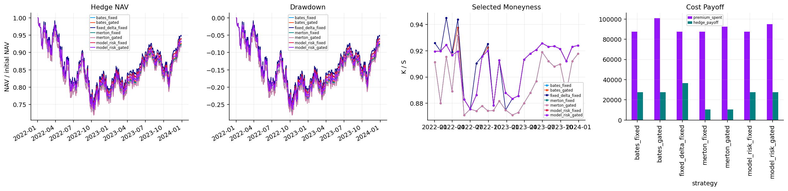
component_rows = []
for _, row in hedge_candidates.iloc[:80].iterrows():
component_rows.append({"selector": row["selector"], "date": row["date"], "tail_payoff": np.log1p(row["payoff_per_premium"]), "model_edge": np.tanh(row["edge_ratio"]), "spread_cost": row["relative_spread"], "premium_bleed": row["premium_bleed"], "model_uncertainty": row["model_uncertainty"]})
hedge_components = pd.DataFrame(component_rows)
edge_table = hedge_candidates.groupby("selector").agg(edge=("edge_ratio", "median"), payoff=("payoff_per_premium", "median"), uncertainty=("model_uncertainty", "median"), spread=("relative_spread", "median")).reset_index()
display(edge_table.round(5))
fig, axes = plt.subplots(1, 3, figsize=(15, 4.5))
comp = hedge_components.groupby("selector")[["tail_payoff", "model_edge", "spread_cost", "premium_bleed", "model_uncertainty"]].median()
comp.plot(kind="barh", stacked=True, ax=axes[0], color=palette[:5])
axes[0].set_title("Score Components")
axes[0].legend(**legend_kw)
axes[1].scatter(hedge_candidates["mid"], hedge_candidates.get("model_price", hedge_candidates["mid"]), s=18, alpha=0.45, color=palette[0])
lo = min(hedge_candidates["mid"].min(), hedge_candidates.get("model_price", hedge_candidates["mid"]).min())
hi = max(hedge_candidates["mid"].max(), hedge_candidates.get("model_price", hedge_candidates["mid"]).max())
axes[1].plot([lo, hi], [lo, hi], color="black", lw=0.8, ls=":")
axes[1].set_xlabel("market premium")
axes[1].set_ylabel("model fair value")
axes[1].set_title("Fair Value")
for i, (name, g) in enumerate(hedge_candidates.groupby("selector")):
axes[2].hist(g["payoff_per_premium"], bins=30, histtype="step", lw=1.1, color=palette[i], label=name)
axes[2].set_xlabel("tail payoff / premium")
axes[2].set_title("Tail Efficiency")
axes[2].legend(**legend_kw)
fig.tight_layout(pad=1.25, h_pad=1.0, w_pad=1.0)
plt.show()| selector | edge | payoff | uncertainty | spread | |
|---|---|---|---|---|---|
| 0 | bates_fixed | 0.014040 | 41.407690 | 0.001310 | 0.042550 |
| 1 | bates_gated | 0.014040 | 41.407690 | 0.001310 | 0.042550 |
| 2 | fixed_delta_fixed | 0.000000 | 39.274020 | 0.000000 | 0.041960 |
| 3 | merton_fixed | 1.380390 | 36.842790 | 0.001360 | 0.046510 |
| 4 | merton_gated | 1.380390 | 36.842790 | 0.001360 | 0.046510 |
| 5 | model_risk_fixed | 0.014040 | 41.407690 | 0.001150 | 0.042550 |
| 6 | model_risk_gated | 0.014040 | 41.407690 | 0.001150 | 0.042550 |
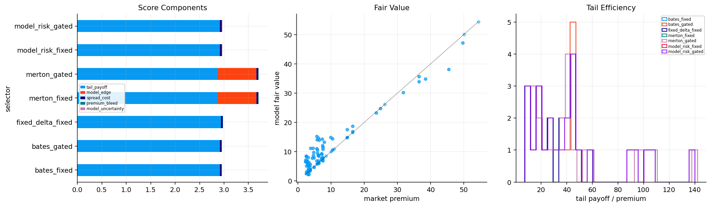
project_objects = {
"clean_quotes": clean_quotes,
"calibration_quotes": calibration_quotes,
"direct_validation": direct_validation,
"fft_validation_table": fft_validation_table,
"cos_validation_table": cos_validation_table,
"jump_daily_fits": jump_daily_fits,
"sv_daily_fits": sv_daily_fits,
"common_dates": pd.Index(common_dates),
"final_model_comparison": final_model_comparison,
"residual_smile": residual_smile,
"tail_diagnostics": tail_diagnostics,
"hedge_candidates": hedge_candidates,
"hedge_schedule": hedge_schedule,
"hedge_trades": hedge_trades,
"hedge_summary": hedge_summary,
}
object_summary = pd.DataFrame([{"name": k, "type": type(v).__name__, "rows": len(v) if hasattr(v, "__len__") and not isinstance(v, dict) else np.nan} for k, v in project_objects.items()])
display(object_summary)| name | type | rows | |
|---|---|---|---|
| 0 | clean_quotes | DataFrame | 4164745 |
| 1 | calibration_quotes | DataFrame | 85850 |
| 2 | direct_validation | DataFrame | 3000 |
| 3 | fft_validation_table | DataFrame | 10 |
| 4 | cos_validation_table | DataFrame | 25 |
| 5 | jump_daily_fits | DataFrame | 1010 |
| 6 | sv_daily_fits | DataFrame | 1010 |
| 7 | common_dates | DatetimeIndex | 505 |
| 8 | final_model_comparison | DataFrame | 3 |
| 9 | residual_smile | DataFrame | 30 |
| 10 | tail_diagnostics | DataFrame | 252 |
| 11 | hedge_candidates | DataFrame | 175 |
| 12 | hedge_schedule | DataFrame | 175 |
| 13 | hedge_trades | DataFrame | 343 |
| 14 | hedge_summary | DataFrame | 7 |
from quantfinlab.options.fourier import direct_price, fft_grid, cos_prices, cos_density, tail_probability, model_cf
from quantfinlab.options.quote_cleaning import convert_quotes_to_usd_equivalent
from quantfinlab.options.bsm import bsm_price
from quantfinlab.dataio import load_option_chain, load_ohlcv
from quantfinlab.calibration.fft_cos import calibration_grid_quotes, calibration_weights, fit_daily_models, compare_fourier_models, family_winner, residual_by_bucket
from quantfinlab.calibration.jump_models import fixed_delta_hedge_candidates, tail_hedge_candidates, tail_hedge_schedule, hedge_score_components
from quantfinlab.backtest.overlays import run_overlay_backtest, overlay_summary, mark_book_for_schedules
from quantfinlab.plotting.options import cos_convergence, fft_fit, throughput, model_quality, daily_calibration_error, model_tournament, residual_smiles, tail_density, tail_probability_series, overlay_equity, hedge_selection, hedge_cost_payoff
btc_cache = cache_dir / "btc"
btc_cache.mkdir(parents=True, exist_ok=True)
btc_raw = load_option_chain(data_dir / "btc_options_chain.parquet", source="btc_deribit")
btc_raw = convert_quotes_to_usd_equivalent(btc_raw, contract_size=1.0)
btc_raw["date"] = pd.to_datetime(btc_raw["date"], errors="coerce").dt.normalize()
btc_raw["expiry"] = pd.to_datetime(btc_raw["expiry"], errors="coerce").dt.normalize()
btc_raw["dte_days"] = btc_raw["tau"] * 365.0
btc_raw["moneyness"] = btc_raw["strike"] / btc_raw["spot"]
btc_raw["log_moneyness"] = np.log(btc_raw["moneyness"])
btc_raw["relative_spread"] = btc_raw.get("rel_spread", (btc_raw["ask"] - btc_raw["bid"]) / btc_raw["mid"].replace(0, np.nan))
btc_raw["iv_mid"] = pd.to_numeric(btc_raw.get("iv", btc_raw.get("mark_iv")), errors="coerce")
btc_raw["rate"] = 0.04
btc_raw["dividend_yield"] = 0.0
btc_raw["discount_factor"] = np.exp(-btc_raw["rate"] * btc_raw["tau"])
btc_quotes = btc_raw[
(btc_raw["bid"] >= 0)
& (btc_raw["ask"] >= btc_raw["bid"])
& (btc_raw["mid"] > 0)
& btc_raw["dte_days"].between(3, 120)
& btc_raw["moneyness"].between(0.55, 1.60)
& btc_raw["relative_spread"].between(0, 0.50)
& btc_raw["iv_mid"].between(0.05, 3.00)
].copy()
btc_quotes["half_spread"] = 0.5 * (pd.to_numeric(btc_quotes["ask"], errors="coerce") - pd.to_numeric(btc_quotes["bid"], errors="coerce"))
btc_quotes["calib_scale_px"] = np.maximum.reduce([
btc_quotes["half_spread"].to_numpy(float),
0.001 * pd.to_numeric(btc_quotes["mid"], errors="coerce").to_numpy(float),
np.full(len(btc_quotes), 5.0),
])
btc_quotes["obs_weight"] = 1.0 / (btc_quotes["relative_spread"].clip(lower=0.01) ** 2 + 0.05 ** 2)
btc_quotes["obs_weight"] = btc_quotes["obs_weight"] / btc_quotes["obs_weight"].median()
btc_quotes["contract_key"] = btc_quotes["option_type"].astype(str) + "_" + btc_quotes["expiry"].dt.strftime("%Y-%m-%d") + "_" + btc_quotes["strike"].round(4).astype(str)
btc_spot = load_ohlcv(data_dir / "btc_usd_ohlcv.csv", fields=("close",))
btc_calib_path = btc_cache / "btc_calibration_grid_quotes.parquet"
btc_steps_path = btc_cache / "btc_calibration_grid_steps.parquet"
btc_calib_settings = {"version": 2, "rows": int(len(btc_quotes)), "min_quotes_per_date": 100, "max_quotes_per_date": 160}
if btc_calib_path.exists() and btc_steps_path.exists() and same_settings(btc_calib_path, btc_calib_settings):
btc_calibration = pd.read_parquet(btc_calib_path)
btc_selection_steps = pd.read_parquet(btc_steps_path)
else:
btc_calibration, btc_selection_steps = calibration_grid_quotes(
btc_quotes,
min_dte=7.0,
max_dte=120.0,
min_vega=0.0,
max_relative_spread=0.50,
max_abs_log_moneyness=0.45,
min_quotes_per_expiry=6,
min_expiries_per_date=4,
dte_targets=(7.0, 14.0, 21.0, 30.0, 45.0, 60.0, 75.0, 90.0, 120.0),
k_targets=(-0.40, -0.32, -0.25, -0.18, -0.12, -0.08, -0.04, 0.0, 0.04, 0.08, 0.12, 0.18, 0.25, 0.32, 0.40),
min_quotes_per_date=100,
max_quotes_per_date=160,
return_steps=True,
)
btc_calibration.to_parquet(btc_calib_path, index=False)
btc_selection_steps.to_parquet(btc_steps_path, index=False)
write_meta(btc_calib_path, btc_calib_settings, len(btc_calibration))
btc_dates = btc_calibration.groupby("date").size()
btc_fit_dates = btc_dates[btc_dates >= 80].index
btc_sv_dates = btc_fit_dates[::3]
btc_jump_path = btc_cache / "btc_jump_daily_fits_scale_v2.parquet"
btc_sv_path = btc_cache / "btc_sv_daily_fits_scale_v2.parquet"
if btc_jump_path.exists():
btc_jump_daily = pd.read_parquet(btc_jump_path)
btc_jump_fit = pd.read_parquet(btc_cache / "btc_jump_daily_fit_prices_scale_v2.parquet")
else:
out = fit_daily_models(btc_calibration, ["merton", "vg"], calibration_dates=btc_fit_dates, min_quotes=80, max_nfev=45, engine="cpp", n_terms=128, truncation_width=16.0)
btc_jump_daily, btc_jump_fit = out["params"], out["fit"]
btc_jump_daily.to_parquet(btc_jump_path, index=False)
btc_jump_fit.to_parquet(btc_cache / "btc_jump_daily_fit_prices_scale_v2.parquet", index=False)
if btc_sv_path.exists():
btc_sv_daily = pd.read_parquet(btc_sv_path)
btc_sv_fit = pd.read_parquet(btc_cache / "btc_sv_daily_fit_prices_scale_v2.parquet")
else:
out = fit_daily_models(btc_calibration, ["heston", "bates"], calibration_dates=btc_sv_dates, min_quotes=80, max_nfev=40, engine="cpp", n_terms=112, truncation_width=16.0)
btc_sv_daily, btc_sv_fit = out["params"], out["fit"]
btc_sv_daily.to_parquet(btc_sv_path, index=False)
btc_sv_fit.to_parquet(btc_cache / "btc_sv_daily_fit_prices_scale_v2.parquet", index=False)
btc_jump_summary = compare_fourier_models(daily=btc_jump_daily)
btc_sv_summary = compare_fourier_models(daily=btc_sv_daily)
btc_jump_winner = family_winner(btc_jump_summary)
btc_sv_winner = family_winner(btc_sv_summary)
btc_bsm_path = btc_cache / "btc_bsm_daily_fits_scale_v2.parquet"
if btc_bsm_path.exists():
btc_bsm_daily = pd.read_parquet(btc_bsm_path)
btc_bsm_fit = pd.read_parquet(btc_cache / "btc_bsm_daily_fit_prices_scale_v2.parquet")
else:
out = fit_daily_models(btc_calibration, ["bsm"], calibration_dates=btc_fit_dates, min_quotes=80, max_nfev=25, engine="cpp", n_terms=112, truncation_width=14.0)
btc_bsm_daily, btc_bsm_fit = out["params"], out["fit"]
btc_bsm_daily.to_parquet(btc_bsm_path, index=False)
btc_bsm_fit.to_parquet(btc_cache / "btc_bsm_daily_fit_prices_scale_v2.parquet", index=False)
btc_final_daily = pd.concat([btc_bsm_daily, btc_jump_daily[btc_jump_daily["model"].eq(btc_jump_winner)], btc_sv_daily[btc_sv_daily["model"].eq(btc_sv_winner)]], ignore_index=True)
btc_final_comparison = compare_fourier_models(daily=btc_final_daily)
btc_fit_prices = pd.concat([btc_bsm_fit, btc_jump_fit[btc_jump_fit["model"].eq(btc_jump_winner)], btc_sv_fit[btc_sv_fit["model"].eq(btc_sv_winner)]], ignore_index=True)
btc_residuals = residual_by_bucket(btc_fit_prices)
btc_sample = btc_quotes.iloc[:80].copy()
spot0 = float(btc_sample["spot"].median())
rate0 = float(btc_sample["rate"].median())
tau0 = float(btc_sample["tau"].median())
strikes = np.linspace(0.70, 1.30, 1000) * spot0
closed = np.asarray(bsm_price("call", spot0, strikes, tau0, float(btc_sample["iv_mid"].median()), rate0, 0.0), dtype=float)
btc_engine_settings = {"version": 2, "spot": round(spot0, 6), "tau": round(tau0, 8), "rows": int(len(btc_sample))}
btc_fft_path = btc_cache / "btc_fft_validation_grid.parquet"
btc_cos_path = btc_cache / "btc_cos_validation_grid.parquet"
btc_fft_fit_path = btc_cache / "btc_fft_fit_grid.parquet"
if btc_fft_path.exists() and btc_cos_path.exists() and btc_fft_fit_path.exists() and same_settings(btc_fft_path, btc_engine_settings):
btc_fft_validation = pd.read_parquet(btc_fft_path)
btc_cos_validation = pd.read_parquet(btc_cos_path)
btc_fft_fit = pd.read_parquet(btc_fft_fit_path)
else:
fft_rows = []
fft_fit_rows = []
for engine in ["numba", "cpp"]:
for n in [4096, 8192, 16384]:
t0 = time.perf_counter()
grid = fft_grid("bsm", [float(btc_sample["iv_mid"].median())], spot0, rate0, 0.0, tau0, n=n, eta=0.35, alpha=1.5, engine=engine)
runtime = time.perf_counter() - t0
interp = np.interp(strikes, grid["strike"], grid["price"])
fft_rows.append({"engine": engine, "n": n, "runtime_sec": runtime, "median_abs_error": float(np.median(np.abs(interp - closed))), "max_abs_error": float(np.max(np.abs(interp - closed)))})
if engine == "cpp" and n == 16384:
fft_fit_rows.extend([{"strike": float(k), "moneyness": float(k / spot0), "fft_price": float(px), "reference_price": float(ref), "abs_error": float(abs(px - ref))} for k, px, ref in zip(strikes, interp, closed)])
btc_fft_validation = pd.DataFrame(fft_rows)
cos_rows = []
for model, params, width in [("bsm", [float(btc_sample["iv_mid"].median())], 12.0), ("merton", [0.65, 0.60, -0.08, 0.35], 16.0), ("vg", [0.65, -0.10, 0.35], 30.0), ("heston", [0.45, 2.0, 0.45, 0.80, -0.45], 16.0), ("bates", [0.45, 2.0, 0.45, 0.80, -0.45, 0.60, -0.08, 0.35], 16.0)]:
ref = cos_prices(model, params, strikes, np.full_like(strikes, tau0), spot0, rate0, 0.0, n_terms=512, truncation_width=width, option_type="call", engine="numba")
for n_terms in [32, 64, 128, 256]:
num = cos_prices(model, params, strikes, np.full_like(strikes, tau0), spot0, rate0, 0.0, n_terms=n_terms, truncation_width=width, option_type="call", engine="numba")
t0 = time.perf_counter()
cpp = cos_prices(model, params, strikes, np.full_like(strikes, tau0), spot0, rate0, 0.0, n_terms=n_terms, truncation_width=width, option_type="call", engine="cpp")
runtime = time.perf_counter() - t0
cos_rows.append({"model": model, "n_terms": n_terms, "runtime_sec": runtime, "items": len(strikes), "max_abs_error": float(np.max(np.abs(num - ref))), "median_abs_error": float(np.median(np.abs(num - ref))), "cpp_numba_diff": float(np.max(np.abs(num - cpp)))})
btc_cos_validation = pd.DataFrame(cos_rows)
btc_fft_fit = pd.DataFrame(fft_fit_rows)
btc_fft_validation.to_parquet(btc_fft_path, index=False)
btc_cos_validation.to_parquet(btc_cos_path, index=False)
btc_fft_fit.to_parquet(btc_fft_fit_path, index=False)
write_meta(btc_fft_path, btc_engine_settings, len(btc_fft_validation))
btc_throughput = pd.concat([
btc_fft_validation.assign(label=btc_fft_validation["engine"] + " FFT", items=btc_fft_validation["n"]),
btc_cos_validation.assign(label="cpp COS", items=btc_cos_validation["items"]),
], ignore_index=True)
btc_model_quality = btc_final_comparison.copy()
btc_tail_path = btc_cache / "btc_tail_series_grid.parquet"
btc_density_path = btc_cache / "btc_density_grid.parquet"
btc_tail_settings = {"version": 2, "jump": btc_jump_winner, "sv": btc_sv_winner, "dates": int(btc_final_daily["date"].nunique())}
if btc_tail_path.exists() and btc_density_path.exists() and same_settings(btc_tail_path, btc_tail_settings):
btc_tail_series = pd.read_parquet(btc_tail_path)
btc_density = pd.read_parquet(btc_density_path)
else:
tail_rows = []
density_rows = []
for d in pd.DatetimeIndex(sorted(btc_final_daily["date"].drop_duplicates()))[::max(1, len(btc_final_daily["date"].drop_duplicates()) // 18)]:
day = btc_quotes[btc_quotes["date"].eq(pd.Timestamp(d).normalize())]
if day.empty:
continue
s = float(day["spot"].median())
r = float(day["rate"].median())
x = np.linspace(np.log(s) - 0.9, np.log(s) + 0.6, 520)
for model in ["bsm", btc_jump_winner, btc_sv_winner]:
source = btc_final_daily[btc_final_daily["model"].eq(model)]
source = source[source["date"].le(pd.Timestamp(d).normalize())].sort_values("date")
if source.empty:
continue
params = source.iloc[-1][[c for c in source.columns if c.startswith("p")]].dropna().to_numpy(float)
den = cos_density(model, params, x, s, r, 0.0, 45 / 365.0)
rel = np.exp(x) / s
probs = {}
for level in [0.90, 0.85, 0.80]:
mask = rel <= level
probs[level] = float(np.trapezoid(den[mask], x[mask])) if mask.any() else 0.0
tail_rows.append({"date": pd.Timestamp(d).normalize(), "model": model, "level": level, "left_tail_probability": probs[level], "tail_probability": probs[level], "tail_prob_80": probs[0.80] if level == 0.80 else np.nan})
if len(density_rows) < 5000:
density_rows.extend([{"date": pd.Timestamp(d).normalize(), "model": model, "x": float(xi), "density": float(yi)} for xi, yi in zip(rel, den)])
btc_tail_series = pd.DataFrame(tail_rows)
btc_density = pd.DataFrame(density_rows)
btc_tail_series.to_parquet(btc_tail_path, index=False)
btc_density.to_parquet(btc_density_path, index=False)
write_meta(btc_tail_path, btc_tail_settings, len(btc_tail_series))
btc_tail_wide = btc_tail_series.pivot_table(index=["date", "model"], columns="level", values="tail_probability").reset_index().rename(columns={0.9: "p90", 0.85: "p85", 0.8: "p80"})
btc_tail_plot = btc_tail_series[btc_tail_series["level"].eq(0.80)].copy()
hedge_input = btc_quotes[btc_quotes["option_type"].astype(str).str.lower().str.startswith("p") & btc_quotes["dte_days"].between(21, 120) & btc_quotes["moneyness"].between(0.70, 0.98) & btc_quotes["relative_spread"].le(0.40)].copy()
btc_hedge_prices_path = btc_cache / "btc_hedge_prices_grid.parquet"
btc_hedge_price_settings = {"version": 4, "rows": int(len(hedge_input)), "jump": btc_jump_winner, "sv": btc_sv_winner, "engine": "cpp date batches", "scale": "usd floor v2"}
if btc_hedge_prices_path.exists() and same_settings(btc_hedge_prices_path, btc_hedge_price_settings):
hedge_input = pd.read_parquet(btc_hedge_prices_path)
else:
hedge_input["jump_price"] = np.nan
hedge_input["sv_price"] = np.nan
for price_col, model, daily, width in [("jump_price", btc_jump_winner, btc_jump_daily, 30.0 if btc_jump_winner == "vg" else 16.0), ("sv_price", btc_sv_winner, btc_sv_daily, 16.0)]:
values = np.full(len(hedge_input), np.nan)
daily_model = daily[daily["model"].eq(model)].copy()
for d, idx in hedge_input.groupby("date", sort=True).groups.items():
source = daily_model[daily_model["date"].le(pd.Timestamp(d).normalize())].sort_values("date")
if source.empty:
continue
params = source.iloc[-1][[c for c in source.columns if c.startswith("p")]].dropna().to_numpy(float)
g = hedge_input.loc[idx]
values[hedge_input.index.get_indexer(idx)] = cos_prices(model, params, g["strike"].to_numpy(float), g["tau"].to_numpy(float), float(g["spot"].median()), float(g["rate"].median()), 0.0, option_type="put", n_terms=112, truncation_width=width, engine="cpp")
hedge_input[price_col] = values
hedge_input.to_parquet(btc_hedge_prices_path, index=False)
write_meta(btc_hedge_prices_path, btc_hedge_price_settings, len(hedge_input))
hedge_input = hedge_input.dropna(subset=["jump_price", "sv_price"]).copy()
hedge_input["model_uncertainty"] = (hedge_input["jump_price"] - hedge_input["sv_price"]).abs() / hedge_input["spot"].clip(lower=1e-8)
def btc_tail_for(model, d):
q = btc_tail_wide[btc_tail_wide["model"].eq(model)].copy()
q = q[q["date"].le(pd.Timestamp(d).normalize())].sort_values("date")
if q.empty:
return pd.Series({"p90": 0.12, "p85": 0.07, "p80": 0.04})
return q.iloc[-1][["p90", "p85", "p80"]].fillna({"p90": 0.12, "p85": 0.07, "p80": 0.04})
def btc_budget_for(model, d, edge_ratio=0.0, relative_spread=0.0, base_bps=35.0):
q = btc_tail_wide[btc_tail_wide["model"].eq(model)].copy()
q = q[q["date"].le(pd.Timestamp(d).normalize())].sort_values("date")
if len(q) < 8:
return base_bps
hist = q["p80"].tail(60).dropna()
if hist.empty:
return base_bps
p = float(hist.iloc[-1])
edge = float(edge_ratio) if np.isfinite(edge_ratio) else 0.0
spread = float(relative_spread) if np.isfinite(relative_spread) else 1.0
add = 0.0
if spread <= 0.30 and p > float(hist.quantile(0.70)) and edge > -0.05:
add += 25.0
if spread <= 0.30 and p > float(hist.quantile(0.85)) and edge > 0.0:
add += 40.0
if spread <= 0.30 and p > float(hist.quantile(0.95)) and edge > 0.0:
add += 60.0
return min(base_bps + add, 120.0)
def with_tail_budget(q, model, gated=False):
out = q.copy()
vals = out["date"].map(lambda d: btc_tail_for(model, d))
out["p90"] = [float(v["p90"]) for v in vals]
out["p85"] = [float(v["p85"]) for v in vals]
out["p80"] = [float(v["p80"]) for v in vals]
if gated:
edge = pd.to_numeric(out.get("model_edge", 0.0), errors="coerce").fillna(0.0) / pd.to_numeric(out.get("mid", 1.0), errors="coerce").replace(0.0, np.nan).fillna(1.0)
spread = pd.to_numeric(out.get("relative_spread", 1.0), errors="coerce").fillna(1.0)
out["budget_bps"] = [
btc_budget_for(model, d, edge_ratio=e, relative_spread=sp)
for d, e, sp in zip(out["date"], edge, spread)
]
else:
out["budget_bps"] = 35.0
return out
fixed = fixed_delta_hedge_candidates(with_tail_budget(hedge_input, btc_sv_winner, False), top_n=None, top_n_per_date=1)
jump_fixed = tail_hedge_candidates(with_tail_budget(hedge_input.assign(model_price=hedge_input["jump_price"], model_edge=hedge_input["jump_price"] - hedge_input["mid"]), btc_jump_winner, False), top_n=None, top_n_per_date=1, crash_level=0.85)
jump_gated = tail_hedge_candidates(with_tail_budget(hedge_input.assign(model_price=hedge_input["jump_price"], model_edge=hedge_input["jump_price"] - hedge_input["mid"]), btc_jump_winner, True), top_n=None, top_n_per_date=1, crash_level=0.85)
sv_fixed = tail_hedge_candidates(with_tail_budget(hedge_input.assign(model_price=hedge_input["sv_price"], model_edge=hedge_input["sv_price"] - hedge_input["mid"]), btc_sv_winner, False), top_n=None, top_n_per_date=1, crash_level=0.80)
sv_gated = tail_hedge_candidates(with_tail_budget(hedge_input.assign(model_price=hedge_input["sv_price"], model_edge=hedge_input["sv_price"] - hedge_input["mid"]), btc_sv_winner, True), top_n=None, top_n_per_date=1, crash_level=0.80)
risk_price = 0.5 * (hedge_input["jump_price"] + hedge_input["sv_price"])
risk_edge = risk_price - hedge_input["mid"] - 0.5 * (hedge_input["jump_price"] - hedge_input["sv_price"]).abs()
risk_frame = hedge_input[hedge_input["moneyness"].le(0.93)].copy()
risk_price = 0.5 * (risk_frame["jump_price"] + risk_frame["sv_price"])
risk_edge = risk_price - risk_frame["mid"] - 0.5 * (risk_frame["jump_price"] - risk_frame["sv_price"]).abs()
risk_frame = risk_frame.assign(model_price=risk_price, model_edge=risk_edge, calibration_penalty=0.0)
risk_fixed = tail_hedge_candidates(with_tail_budget(risk_frame, btc_sv_winner, False), top_n=None, top_n_per_date=1, crash_level=0.80)
risk_gated = tail_hedge_candidates(with_tail_budget(risk_frame, btc_sv_winner, True), top_n=None, top_n_per_date=1, crash_level=0.80)
btc_hedge_candidates = pd.concat([
fixed.assign(selector="fixed_delta_35bps"),
jump_fixed.assign(selector=f"{btc_jump_winner}_35bps"),
jump_gated.assign(selector=f"{btc_jump_winner}_tail_gated"),
sv_fixed.assign(selector=f"{btc_sv_winner}_35bps"),
sv_gated.assign(selector=f"{btc_sv_winner}_tail_gated"),
risk_fixed.assign(selector="model_risk_35bps"),
risk_gated.assign(selector="model_risk_tail_gated"),
], ignore_index=True)
btc_schedules = {}
for selector, group in btc_hedge_candidates.groupby("selector"):
sched = tail_hedge_schedule(group, spacing_days=21, budget_notional=1_000_000.0, premium_budget_bps=35.0, budget_col="budget_bps", contract_multiplier=1.0, label="tail_put")
btc_schedules[selector] = sched
btc_schedules["unhedged"] = pd.DataFrame(columns=["entry_date", "contract_key", "expiry", "strike", "option_type", "quantity", "label"])
btc_underlying = btc_spot["close"].reindex(pd.DatetimeIndex(sorted(btc_quotes["date"].unique()))).ffill()
btc_shares = 1_000_000.0 / float(btc_underlying.dropna().iloc[0])
btc_hedge_book = mark_book_for_schedules(btc_quotes, btc_schedules)
btc_hedge_nav_path = btc_cache / "btc_hedge_nav_grid.parquet"
btc_hedge_trades_path = btc_cache / "btc_hedge_trades_grid.parquet"
btc_hedge_settings = {"version": 8, "schedule_rows": int(sum(len(x) for x in btc_schedules.values())), "mark_rows": int(len(btc_hedge_book)), "base_budget_bps": 35.0, "tail_gated_budget": "price_aware", "risk_penalty": 0.0, "risk_moneyness_max": 0.93, "spacing_days": 21}
if btc_hedge_nav_path.exists() and btc_hedge_trades_path.exists() and same_settings(btc_hedge_nav_path, btc_hedge_settings):
btc_hedge_nav = pd.read_parquet(btc_hedge_nav_path).set_index("date")
btc_hedge_nav.index = pd.to_datetime(btc_hedge_nav.index, errors="coerce").normalize()
if not btc_hedge_nav.empty and float((btc_hedge_nav.iloc[0] - 1_000_000.0).abs().max()) > 1e-8:
btc_hedge_nav = pd.concat([pd.DataFrame({c: 1_000_000.0 for c in btc_hedge_nav.columns}, index=[btc_hedge_nav.index.min()]), btc_hedge_nav])
btc_hedge_trades = pd.read_parquet(btc_hedge_trades_path)
btc_hedge_results = {"nav": btc_hedge_nav, "drawdown": btc_hedge_nav / btc_hedge_nav.cummax() - 1.0, "trades": btc_hedge_trades}
else:
btc_hedge_results = run_overlay_backtest(btc_schedules, btc_hedge_book, btc_underlying, initial_nav=1_000_000.0, contract_multiplier=1.0, shares=btc_shares)
btc_hedge_results["nav"].reset_index(names="date").to_parquet(btc_hedge_nav_path, index=False)
btc_hedge_results["trades"].to_parquet(btc_hedge_trades_path, index=False)
write_meta(btc_hedge_nav_path, btc_hedge_settings, len(btc_hedge_results["nav"]))
btc_hedge_summary = overlay_summary(btc_hedge_results)
btc_trade_check = btc_hedge_results["trades"].copy()
if btc_trade_check.empty:
btc_hedge_check = pd.DataFrame([{"rows": 0, "open_trades": 0, "mark_rows": len(btc_hedge_book), "max_quantity": 0.0, "median_open_price": np.nan, "premium_spent": 0.0}])
else:
btc_open = btc_trade_check[btc_trade_check["event"].eq("open")].copy()
btc_hedge_check = btc_open.groupby("strategy", as_index=False).agg(open_trades=("event", "size"), max_quantity=("quantity", "max"), median_quantity=("quantity", "median"), median_open_price=("price", "median"), premium_spent=("cashflow", lambda x: -float(np.sum(x))), median_moneyness=("moneyness", "median"), median_dte=("dte_days", "median"))
btc_hedge_check["mark_rows"] = len(btc_hedge_book)
display(pd.DataFrame([{"btc_rows": len(btc_quotes), "calibration_rows": len(btc_calibration), "calibration_dates": btc_calibration["date"].nunique(), "avg_quotes_per_date": btc_dates.mean(), "jump_winner": btc_jump_winner, "sv_winner": btc_sv_winner}]).round(4))
display(btc_selection_steps)
display(btc_final_comparison.round(6))
display(btc_hedge_check.round(4))
display(btc_hedge_summary.round(6))
fig, axes = plt.subplots(3, 4, figsize=(22, 15))
axes = axes.ravel()
cos_convergence(axes[0], btc_cos_validation, "COS Convergence")
fft_fit(axes[1], btc_fft_fit, "FFT Fit")
throughput(axes[2], btc_throughput, "Throughput")
model_quality(axes[3], btc_model_quality, "Model Quality")
daily_calibration_error(axes[4], btc_jump_daily, "Jump RMSE")
daily_calibration_error(axes[5], btc_sv_daily, "SV RMSE")
model_tournament(axes[6], btc_final_comparison, "Model Tournament")
residual_smiles(axes[7], btc_residuals.assign(x=np.arange(len(btc_residuals))), "Residual Smile")
tail_density(axes[8], btc_density.rename(columns={"x": "x"}), "Tail Density")
tail_probability_series(axes[9], btc_tail_plot, "Tail Probability")
overlay_equity(axes[10], btc_hedge_results, "Hedge NAV")
hedge_cost_payoff(axes[11], btc_hedge_results["trades"], "Hedge Cashflow")
fig.tight_layout(pad=1.25, h_pad=1.0, w_pad=1.0)
plt.show()| btc_rows | calibration_rows | calibration_dates | avg_quotes_per_date | jump_winner | sv_winner | |
|---|---|---|---|---|---|---|
| 0 | 96695 | 26958 | 269 | 100.215600 | merton | heston |
| step | rows | removed | |
|---|---|---|---|
| 0 | clean quotes | 96695 | 0 |
| 1 | finite market fields | 96695 | 0 |
| 2 | DTE window | 90127 | 6568 |
| 3 | log-moneyness window | 84044 | 6083 |
| 4 | spread window | 84044 | 0 |
| 5 | OTM side by strike | 44863 | 39181 |
| 6 | expiry support | 44856 | 7 |
| 7 | date support | 44838 | 18 |
| 8 | daily grid | 26958 | 17880 |
| model | dates | quotes | success_rate | weighted_price_rmse | median_abs_price_error | weighted_iv_rmse | bid_ask_hit_rate | otm_put_rmse | short_maturity_rmse | runtime_sec | |
|---|---|---|---|---|---|---|---|---|---|---|---|
| 0 | heston | 90 | 9037 | 0.888889 | 219,721.689531 | 50.921645 | 16.884578 | 0.313979 | 156,043.887820 | 135,635.307901 | 132.746129 |
| 1 | merton | 269 | 26958 | 0.933086 | 326,547.990085 | 80.954874 | 13.732222 | 0.212765 | 269,626.583733 | 263,267.495891 | 113.790403 |
| 2 | bsm | 269 | 26958 | 1.000000 | 547,644.803277 | 133.812161 | 17.356554 | 0.122437 | 404,110.922422 | 478,264.446398 | 14.837551 |
| strategy | open_trades | max_quantity | median_quantity | median_open_price | premium_spent | median_moneyness | median_dte | mark_rows | |
|---|---|---|---|---|---|---|---|---|---|
| 0 | fixed_delta_35bps | 13 | 2.314300 | 1.438800 | 2,432.650500 | 45,500.000000 | 0.874300 | 74.000000 | 2608 |
| 1 | heston_35bps | 13 | 2.622100 | 1.085900 | 3,223.126100 | 45,500.000000 | 0.967700 | 32.000000 | 2608 |
| 2 | heston_tail_gated | 13 | 2.622100 | 1.085900 | 3,223.126100 | 45,500.000000 | 0.967700 | 32.000000 | 2608 |
| 3 | merton_35bps | 13 | 2.053500 | 1.085900 | 3,223.126100 | 45,500.000000 | 0.971700 | 32.000000 | 2608 |
| 4 | merton_tail_gated | 13 | 2.053500 | 1.258700 | 3,223.126100 | 50,500.000000 | 0.971700 | 32.000000 | 2608 |
| 5 | model_risk_35bps | 13 | 3.408700 | 1.712700 | 2,043.599100 | 45,500.000000 | 0.922300 | 32.000000 | 2608 |
| 6 | model_risk_tail_gated | 13 | 3.408700 | 1.712700 | 2,043.599100 | 45,500.000000 | 0.922300 | 32.000000 | 2608 |
| strategy | final_nav | total_pnl | total_return | annualized_return | max_drawdown | downside_deviation | worst_month | best_month | trades | roll_closes | assignment_defense_closes | expiry_settlements | net_open_premium_cashflow | spread_cost | ann_vol | |
|---|---|---|---|---|---|---|---|---|---|---|---|---|---|---|---|---|
| 0 | fixed_delta_35bps | 1,419,424.616740 | 419,424.616740 | 0.419425 | 0.386665 | -0.265315 | 0.278467 | -0.151437 | 0.434222 | 25 | 12 | 0 | 0 | -45,500.000000 | 566.764603 | 0.457073 |
| 1 | heston_35bps | 1,418,600.808647 | 418,600.808647 | 0.418601 | 0.385914 | -0.264249 | 0.278509 | -0.151540 | 0.434564 | 25 | 12 | 0 | 0 | -45,500.000000 | 497.453520 | 0.457584 |
| 2 | heston_tail_gated | 1,418,600.808647 | 418,600.808647 | 0.418601 | 0.385914 | -0.264249 | 0.278509 | -0.151540 | 0.434564 | 25 | 12 | 0 | 0 | -45,500.000000 | 497.453520 | 0.457584 |
| 3 | merton_35bps | 1,418,616.831764 | 418,616.831764 | 0.418617 | 0.385928 | -0.264247 | 0.278507 | -0.151538 | 0.434327 | 25 | 12 | 0 | 0 | -45,500.000000 | 485.776041 | 0.457585 |
| 4 | merton_tail_gated | 1,415,628.473038 | 415,628.473038 | 0.415628 | 0.383203 | -0.264808 | 0.278509 | -0.152039 | 0.434327 | 25 | 12 | 0 | 0 | -50,500.000000 | 535.177097 | 0.457669 |
| 5 | model_risk_35bps | 1,414,559.893114 | 414,559.893114 | 0.414560 | 0.382229 | -0.266100 | 0.278450 | -0.152081 | 0.435267 | 25 | 12 | 0 | 0 | -45,500.000000 | 752.587062 | 0.458046 |
| 6 | model_risk_tail_gated | 1,414,559.893114 | 414,559.893114 | 0.414560 | 0.382229 | -0.266100 | 0.278450 | -0.152081 | 0.435267 | 25 | 12 | 0 | 0 | -45,500.000000 | 752.587062 | 0.458046 |
| 7 | unhedged | 1,433,853.870892 | 433,853.870892 | 0.433854 | 0.399817 | -0.261820 | 0.279144 | -0.149954 | 0.437169 | 0 | 0 | 0 | 0 | NaN | NaN | 0.454900 |
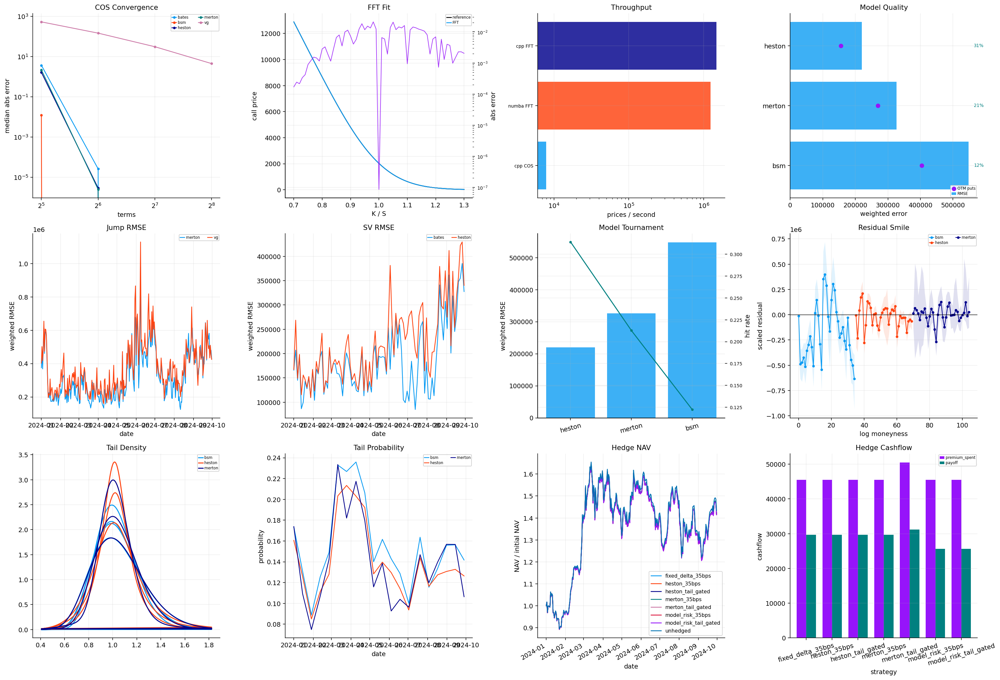